pacman::p_load(tmap, sf, tidyverse, sfdep, knitr, Hmisc, mapview, DT)Take-home 2 - Applied Spatial Interaction Models: A case study of Singapore public bus commuter flows

1 Overview
Understanding why city residents wake up early to travel from home to work and assessing the consequences of discontinuing a public bus service along a specific route are key challenges faced by transport operators and urban managers in the realm of urban mobility. Traditionally, answering such questions relied on expensive, time-consuming commuter surveys. However, these surveys not only demanded considerable resources but also yielded data that took a substantial amount of time to clean and analyze, often rendering it outdated by the time reports were ready.
In today’s digital era, urban infrastructures, including public buses and mass rapid transits, are becoming increasingly digital. The proliferation of technologies like GPS on vehicles and SMART cards for public transport users generates vast geospatial data sets, offering insights into movement patterns over time and space. Despite this wealth of data, planners struggle to effectively leverage and transform it into valuable information, impacting the return on investment in data collection and management.
To address this gap, this exercise conducts a case study showcasing the potential of Geographic Information System and Spatial Data Analysis (GDSA). By integrating data from various sources, this approach aims to build spatial interaction models that unveil the factors influencing urban mobility patterns in the context of public bus transit.
This task aims to achieve specific goals, focusing on General Geospatial Data Science and Spatial Interaction Modeling.
For the General Geospatial Data Science, the aim is to do the following: - Create a detailed hexagon map (375m distance from center to edges) representing Traffic Analysis Zones (TAZ). - Various time will have different pattern of traffic flow. For this study, the focus is on the period of weekday morning peak from 6am to 9am. - Develop an Origin-Destination (O-D) matrix illustrating commuter flows during the chosen time interval. - Visualize passenger trip flows using geospatial methods, analyzing the observed spatial patterns. - Gather relevant data, both spatial and aspatial, from publicly available sources. - Generate a distance matrix based on the earlier derived hexagon data.
is 375m a magical number?
Studies have found that people are usually willing to walk approximately 750 meters to get to public transportation. A more specific comfortable walking distance that takes into account the local weather and how cities are laid out.
When planning city maps and deciding where to place public transport stops, we use hexagons to represent areas on the map. Why hexagons? They fit together perfectly without wasting any space, which makes them great for dividing the map into zones. To match the 750-meter walking distance, each hexagon is sized so that the distance from the center to any edge is half that distance, which is 375 meters. This ensures that anyone within the hexagon is no more than a 750-meter walk away from the center, where a public transport stop would be ideally located. This method is a smart way to make sure that everyone has easy access to transport within a reasonable walking distance.
summarized from: Daniels & Mulley, Dhuri, Sekste & Kazakov, and in-class explanation from Prof Kam Tin Seong
what is Traffic Analysis Zones (TAZ)?
A Traffic Analysis Zone (TAZ) is a way of dividing a city into smaller areas for transportation planning. Each TAZ has some information about the people and places in it, such as how many people live there, how many cars they have, and where they work or go to school. These information help planners understand how people travel and what kind of transportation they need.
Some key points about TAZs are:
The size and shape of a TAZ can vary depending on the location and the purpose of the study. For example, a TAZ in a downtown area might be smaller and more regular than a TAZ in a rural area.
The choice of a TAZ system is very important because it affects the accuracy and usefulness of the transportation models. A good TAZ system should reflect the reality of the travel patterns and demands in the city.
AZs are not fixed and can be changed or updated over time to reflect new data or changes in the city. However, changing TAZs can also cause some problems, such as losing historical data or making comparisons difficult.
Summarized from: Miller, 2021
what is Origin-Destination (O-D) matrix?
An Origin-Destination (O-D) matrix is a way of showing how many trips are made from one place to another in a given area. For example, an O-D matrix can tell us how many people travel from their home to their work, or from their hotel to a tourist attraction, or from one city to another. An O-D matrix can help us understand the travel patterns and demands of people, and plan for better transportation systems.
An O-D matrix usually looks like a table, where the rows represent the origins (where the trips start) and the columns represent the destinations (where the trips end). Each cell in the table shows the number of trips between a specific origin and destination. Sometimes, the table can also include other information, such as the mode of transportation (car, bus, bike, etc.), the time of the day, or the purpose of the trip.
Here is an example of a simple O-D matrix for a city with four zones (A, B, C, and D):
| A | B | C | D | Total | |
|---|---|---|---|---|---|
| A | 0 | 10 | 5 | 15 | 30 |
| B | 20 | 0 | 10 | 10 | 40 |
| C | 10 | 15 | 0 | 5 | 30 |
| D | 5 | 5 | 5 | 0 | 15 |
| Total | 35 | 30 | 20 | 30 | 115 |
This table tells us that there are 115 trips in total in the city, and that the most common origin-destination pair is A-D, with 15 trips. It also tells us that no one travels within the same zone (the diagonal cells are zero).
An O-D matrix can be created from different sources of data, such as surveys, GPS, mobile phones, or social media. Depending on the data source, the level of detail and accuracy of the O-D matrix can vary. For example, a survey might ask people to report their exact home and work locations, while a GPS device might only record the coordinates of the start and end points of a trip. Therefore, different methods and techniques are needed to process and analyze the data, and to convert them into a meaningful O-D matrix.
Summarized From: Coşkun, et al., 2020
what is trip flows?
Trip flows are the movements of people or things from one place to another in a given area. For example, trip flows can show how many people travel from their home to their work, or from one city to another, or from one country to another. Trip flows can help us understand the patterns and reasons of these movements, and how they affect the environment, the economy, and the society.
Summarized from: Tao Ran, 2021
spatial vs aspatial data
Spatial data is data that has a geographic or spatial component, meaning that it is related to a specific location on the Earth’s surface. For example, the coordinates of a city, the shape of a lake, or the population density of a region are all spatial data. Spatial data can be represented using maps, graphs, or statistics, and can be analyzed using Geographic Information Systems (GIS).
Aspatial data is data that does not have a direct connection to a specific location. For example, the name of a person, the color of a car, or the price of a product are all aspatial data. Aspatial data can be represented using tables, charts, or text, and can be analyzed using various methods such as arithmetic, logic, or statistics.
The main difference between spatial and aspatial data is that spatial data can show the spatial relationships and patterns of the data, such as distance, direction, or proximity, while aspatial data cannot. Spatial data can also be combined with aspatial data to provide more information and insights. For example, a map of a city can show both the spatial data (the location and shape of the buildings) and the aspatial data (the name and use of the buildings).
Summarized from: Cengel
what is distance matrix?
A distance matrix is a way of showing how far away different places are from each other in a given area. For example, a distance matrix can tell us how many kilometers or minutes it takes to travel from one city to another by car, bus, or bike. Applying geospatial analytics on distance matrix can help us understand the patterns and reasons of these movements, and how they affect the environment, the economy, and the society. dive deeper at (ArcGIS)[https://pro.arcgis.com/en/pro-app/latest/tool-reference/spatial-analyst/distance-analysis.htm]
For the General Spatial Interaction Model, the aim is to do the following:
Adjust spatial interaction models to identify factors influencing urban commuting during the specified time.
Present modeling results using suitable geovisualization and graphical methods.
Interpret the outcomes to gain insights into the factors impacting commuting flows in the urban landscape during the selected time frame.
what is spatial interaction model?
A spatial interaction model is a way of describing how people or things move from one place to another in a given area. For example, a spatial interaction model can show how many people commute from their home to their work, or how many goods are traded between different cities or countries. A spatial interaction model can help us understand the patterns and reasons of these movements, and how they affect the environment, the economy, and the society.
One of the most common spatial interaction models is the gravity model, which is based on an analogy to the physical law of gravity. The gravity model assumes that the movement between two places is proportional to their size (such as population or income) and inversely proportional to their distance. The gravity model can be written as:
\[T_{ij} = k \frac{v_i^{\lambda} w_j^{\alpha}}{d_{ij}^{\beta}}\]
where \(T_{ij}\) is the movement from place \(i\) to place \(j\), \(v_i\) is the propulsiveness factor from the origin(\(i\)) place,\(w_j\) is the attractiveness factor from the destination (\(j\)), and \(d_{ij}\) is the distance between the two places. \(k\) is a constant model parameter, while \(\lambda\), \(\alpha\), and \(\beta\) are parameters that measures the effect of their respective variables.
There are other types of spatial interaction models, such as the potential model and retail model, which have different assumptions and formulations. These models can be used to explain different kinds of movements, such as migration, tourism, or disease spread.
References: Kam Tin Seong and Spatial interaction models with R
The spatial interaction models being used in this task are the variants of Gravity Model including Unconstrained, Origin Constrained, Destination Constrained, and Doubly Constraint. The models’ performance will be compared to see which one is more appropriate to use in the modelling.
What is Unconstrained Gravity Model?
The Unconstrained Gravity Model is a simple form of the gravity model where the principle of conservation is ignored. This means that the interaction between two locations is not limited by the total number of interactions at the origin or destination. In this model, the interaction between two locations is a constant scaling factor, independent of all origins and destinations.
What is Origin Constrained Gravity Model?
The Origin/Production Constrained Gravity Model, also known as the production constrained model, includes origin-specific balancing factors that act as constraints. These constraints ensure that the estimated rows of the flow data matrix sum to the observed row totals. In other words, the total number of interactions originating from a location is fixed, and the model distributes these interactions across various destinations.
What is Destination Constrained Gravity Model?
The Destination/Attraction Constrained Gravity Model, also known as the attraction constrained model, includes destination-specific balancing factors that act as constraints. These constraints ensure that the estimated columns of the flow data matrix sum to the observed column totals. This means that the total number of interactions attracted to a location is fixed, and the model distributes these interactions across various origins.
What is Doubly Constrained Gravity Model?
The Doubly Constrained Gravity Model includes both origin and destination-specific balancing factors that act as constraints. These constraints ensure that the estimated rows and columns of the flow data matrix sum to the observed row and column totals. In other words, both the total number of interactions originating from a location and attracted to a location are fixed.
To dive deeper on these models, explanation can be found on research by Haynes & Fotheringham, 1985 and class materials by Prof Kam Tin Seong
the content of the following panel explained what aspatial and geospatial data are used in this project.
October 2023 Period
downloaded from LTA DataMall - Dynamic Dataset via API
csvformat.Columns/Fields in the dataset includes YEAR_MONTH, DAY_TYPE, TIME_PER_HOUR, PT_TYPE, ORIGIN_PT_CODE, DESTINATION_PT_CODE, and TOTAL_TRIPS.
metadata
YEAR_MONTH: Represent year and Month in which the data is collected. Since it is a monthly data frame, only one unique value exist in each data frame.
DAY_TYPE: Represent type of the day which classified as weekdays or weekends/holidays.
TIME_PER_HOUR: Hour which the passenger trip is based on, in intervals from 0 to 23 hours.
PT_TYPE: Type of public transport, Since it is bus data sets, only one unique value exist in each data frame (i.e. bus)
ORIGIN_PT_CODE: ID of origin bus stop
DESTINATION_PT_CODE: ID of destination bus stop
TOTAL_TRIPS: Number of trips which represent passenger volumes
Tutorial on Fetching the Data
Click this link, and click the
Request for API Access
Fill in the required form

Check email for confirmation. The
API Account Keywill be required for later step.
The user guide from LTA here will explains how to make API calls. The user guide also provide the link required for various kind of dataset, keep the link for future use.

The following step assume usage of desktop apps version of
Postmanto make the API call. Firstly, go to Postman and click on the logo of the OS system that you are using.
The following step is for Windows User, adjust accordingly if you use other OS. Click on the dowload button, install the apps, and launch it.

In the apps, copy-paste the url from step 4, and make sure that the option is set to
GET. In this case where the data is monthly, you need to add a parameter of the month data that you want to download in the format of YYYYMM (202308 shown in the example). The parameter is underParamssection.
Next, go to
Headerssection and add AccountKey which value can be obtained from step 3. Click the blueSendbutton.
Click the link that will come out on the bottom of the apps, it will be opened in a new tab.

In this last step, click
Send and Downloadin the new tab. You can choose where to put the data and the download will start.
The dataset contains comprehensive information about various Housing and Development Board (HDB) blocks situated in Singapore. The dataset not only includes details on the number and types of dwelling units but also crucially provides the geographic coordinates, specifically the longitudes and latitudes, corresponding to each HDB block. This geographical information opens the door to transforming the dataset into a spatial data frame, enabling us to treat the HDB block details as a spatial object. By leveraging these coordinates, we can engage in spatial analysis and visualization, gaining valuable insights into the spatial distribution and relationships among different HDB blocks across Singapore. This spatial perspective enhances the depth of understanding and opens avenues for exploring the geographical patterns inherent in the HDB block dataset. The original dataset can be downloaded from Singapore’s National Open Data Collection. However, the original dataset does not contain geoidentifier. The geoidentifier in the HDB dataset that is used here was provided by Prof Kam Tin Seong.
The School Directory and Information dataset, sourced from Singapore’s National Open Data Collection, provides valuable information pertinent to the morning period, notably involving students commuting to school. The dataset encompasses details about the locations, implicitly indicated by the ‘POSTAL_CODE’ field, of MOE kindergartens, primary schools, secondary schools, and junior colleges. Notably, it excludes information on the locations of ITEs, polytechnics, and universities. With a total of 346 records, this dataset serves as a comprehensive resource for understanding the geographical distribution of various educational institutions.
Geospatial data in shp format are used in this project, as shown in the following panel:
provides information about all the bus stops currently being serviced by buses, including the bus stop code (identifier) and location coordinates.
downloaded from LTA DataMall - Static Dataset
Columns/Fields in the dataset includes BUS_STOP_N, BUS_ROOF_N, LOC_DESC, and geometry.
metadata
- BUS_STOP_N: The unique identifier for each bus stop.
- BUS_ROOF_N: The identifier for the bus route or roof associated with the bus stop.
- LOC_DESC: Location description providing additional information about the bus stop’s surroundings.
- geometry: The spatial information representing the location of each bus stop as a point in the SVY21 projected coordinate reference system.
Provides information about the sub-zone boundary of Urban Redevelopment Authority (URA) Master Plan 2019 (MPSZ-2019).
The original dataset can be downloaded from Singapore’s National Open Data Collection. However, the original dataset have a different file type from the one that is used in this project. The changed file type of the data was provided by Prof Kam Tin Seong.
Columns/Fields in the dataset includes SUBZONE_N, SUBZONE_C, PLN_AREA_N, PLN_AREA_C, REGION_N, REGION_C, and geometry
While the analysis primarily focuses on hexagon cells, incorporating the Master Planning Sub-Zone 2019 file enables the integration of additional point layers like Retail and Leisure onto the Singapore map. This integration facilitates the visualization of their respective locations within various planning sub-zones across Singapore.
metadata
- SUBZONE_N: The unique name for each subzone boundary.
- SUBZONE_C: The unique identifier for each subzone boundary.
- PLN_AREA_N: The unique name for each planning area.
- PLN_AREA_C: The unique identifier for each planning area
- REGION_N: The unique name for each region.
- REGION_C: The unique identifier for each region.
- geometry: The spatial information representing the location of each subzone boundary in Coordinate Reference System (CRS) from World Geodetic Systems (WGS) 84.
A hexagon layer of 375m (perpendicular distance between the centre of the hexagon and its edges.) Each spatial unit is regular in shape and finer than the Master Plan 2019 Planning Sub-zone GIS data set of URA.
why hexagon?
Uniform Distances Everywhere: Think of hexagons as honeycomb cells. Each cell (hexagon) touches its neighbors at the same distance from its center. It’s like standing in the middle of a room and being the same distance from every wall, making it easier to measure and compare things.
Outlier-Free Shape: Hexagons are like well-rounded polygons without any pointy tips. Sharp corners can create odd spots in data, but hexagons smoothly cover space without sticking out anywhere. This helps prevent weird data spikes that don’t fit the pattern.
Consistent Spatial Relationships: Imagine a beehive where every hexagon is surrounded by others in the same pattern. This regular pattern is great for analyzing data because you can expect the same relationships everywhere, making the data predictable and easier to work with.
Ideal for Non-Perpendicular Features: Real-world features like rivers and roads twist and turn. Squares can be awkward for mapping these, but hexagons, which are more circular, can follow their flow better. This way, a hexagon-based map can mimic the real world more closely than a checkerboard of squares.
Summarized from: Dhuri, and Sekste & Kazakov.
The following dataset will support as propulsive/attractive factors for the modelling. The data was provided by Prof Kam Tin Seong. The data includes:
Business: provide information about business locations across Singapore
Rapid Transit System Station: encompasses the geographical positions of Mass Rapid Transit (MRT) and Light Rail Transit (LRT) stations in Singapore, represented as polygon shapes.
Train Station Exit Layer: includes exit points for all MRT and LRT stations in Singapore, stored as individual points.
Entertainment: highlights the locations of entertainment venues in Singapore, such as cinemas and theaters, presented as points.
Food & Beverage: captures the locations of Food & Beverage venues in Singapore, such as restaurants and cafes, organized as points.
Financial Services: showcases the locations of Financial Services in Singapore, encompassing ATMs, money changers, and banks, stored as individual points.
Leisure & Recreation: denotes the locations of Leisure and Recreation venues in Singapore, spanning sports venues, museums, and galleries, organized as points.
Retails: documents the locations of Retail venues in Singapore, encompassing all shops that may not fit into other categories, presented as points.
2 Preparation
Before starting with the analysis, we have to load the library and import the data. This section also contains minor checking and setup of the data.
2.1 Import Library
The following code chunk utilizing pacman will import the required library (and install it if it does not exist in the environment yet).
pacman::p_load(tmap, sf, tidyverse, sfdep, knitr, Hmisc, mapview, DT, sp, stplanr, reshape2, skimr, performance, plotly, h3jsr, units, httr, corrplot)
Packages Explanations
tmap: Used for creating thematic maps in R, both static and interactive, with extensive mapping capabilities.
sf: Handles and manipulates geospatial data, enabling operations like reading, writing, transforming, and visualizing spatial data.
tidyverse: A suite of R packages designed for data science tasks, including data manipulation, exploration, and visualization.
sfdep: This package provides methods for measuring and diagnosing spatial dependence in linear regression models, particularly when working with spatial econometrics. It is tailored to work with ‘sf’ objects, which are used to handle spatial data in R.
knitr: Allows for dynamic report generation with R, making it easy to integrate R code into reports and weave together narrative text and code output.
Hmisc: Contains many functions useful for data analysis, high-level graphics, utility operations, and functions for dealing with missing values.
mapview: Facilitates the interactive viewing of spatial data in R, built on top of Leaflet.js.
DT: Provides an R interface to the JavaScript library DataTables, useful for creating interactive tables in R markdown documents and Shiny apps.
sp: Provides classes and methods for spatial data, and has been superseded by
sfbut is still widely used for compatibility reasons.stplanr: Offers sustainable transport planning tools for spatial lines, networks, and movement data.
reshape2: An R package that allows you to flexibly reshape data, such as melting and casting data frames.
skimr: Summarizes data in a frictionless way and produces a report with useful summary statistics.
performance: Assesses the quality and performance of statistical models, including checks for assumptions.
plotly: An R package that creates interactive web graphics using the plotly.js library.
h3jsr: Provides an R interface to Uber’s H3 spatial indexing system, allowing for the use of hexagonally-tiled maps.
units: Allows for the symbolic handling of measurement units in R.
httr: Simplifies the process of working with HTTP requests, such as API calls.
corrplot: Visualizes a correlation matrix, making it easier to understand the relationships between multiple variables.
2.2 Data Import and Minor Wrangling
This section will import the required aspatial and geospatial dataset. The process also involves minor data change before going to more complex data wrangling in the next section.
Geospatial
the following panel will show how each geospatial dataset is imported, modify the CRS Code to 3414 to standardize, check on the data in general, check for duplicates, and display how the data looks like in Singapore map
what is CRS Code?
Why 3414?
MPSZ
Code
mpsz <- st_read(dsn='../data/geospatial',
layer='MPSZ-2019') %>%
st_transform(crs=3414)Reading layer `MPSZ-2019' from data source `C:\ameernoor\ISSS624\data\geospatial' using driver `ESRI Shapefile'
Simple feature collection with 332 features and 6 fields
Geometry type: MULTIPOLYGON
Dimension: XY
Bounding box: xmin: 103.6057 ymin: 1.158699 xmax: 104.0885 ymax: 1.470775
Geodetic CRS: WGS 84Code
glimpse(mpsz)Rows: 332
Columns: 7
$ SUBZONE_N <chr> "MARINA EAST", "INSTITUTION HILL", "ROBERTSON QUAY", "JURON…
$ SUBZONE_C <chr> "MESZ01", "RVSZ05", "SRSZ01", "WISZ01", "MUSZ02", "MPSZ05",…
$ PLN_AREA_N <chr> "MARINA EAST", "RIVER VALLEY", "SINGAPORE RIVER", "WESTERN …
$ PLN_AREA_C <chr> "ME", "RV", "SR", "WI", "MU", "MP", "WI", "WI", "SI", "SI",…
$ REGION_N <chr> "CENTRAL REGION", "CENTRAL REGION", "CENTRAL REGION", "WEST…
$ REGION_C <chr> "CR", "CR", "CR", "WR", "CR", "CR", "WR", "WR", "CR", "CR",…
$ geometry <MULTIPOLYGON [m]> MULTIPOLYGON (((33222.98 29..., MULTIPOLYGON (…Code
# check for duplicates based on unique id
if_else(n_distinct(mpsz$SUBZONE_N) == nrow(mpsz), "no duplicates detected", "possible duplicates detected")[1] "no duplicates detected"Code
# set tmap mode (plot for lighter rendering, view for analysis)
tmap_mode('plot')
# display the data in a map
tm_shape(mpsz)+
tm_polygons(alpha = 0.3) +
tm_layout(main.title = 'Singapore Planning Zone', main.title.position = "center")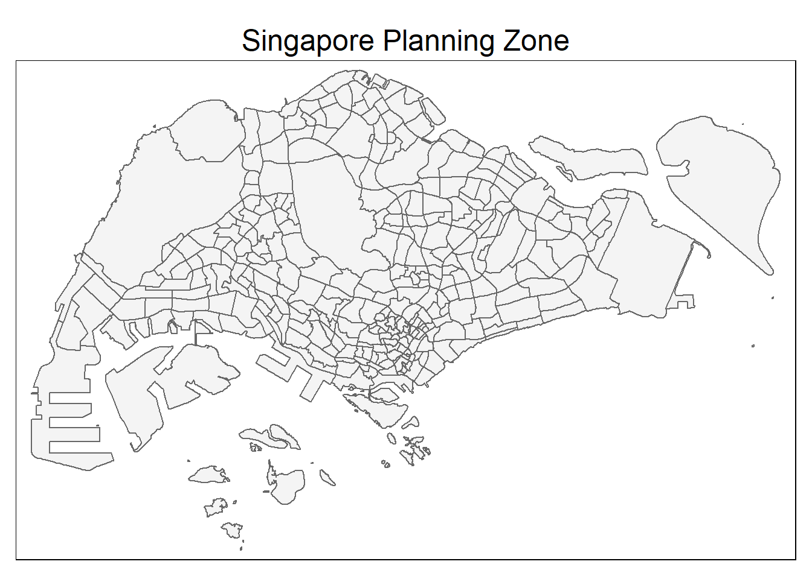
Bus Stop Location
Code
busstop <- st_read(dsn = "../data/geospatial",
layer = "BusStop") %>%
st_transform(crs = 3414)Reading layer `BusStop' from data source `C:\ameernoor\ISSS624\data\geospatial' using driver `ESRI Shapefile'
Simple feature collection with 5159 features and 3 fields
Geometry type: POINT
Dimension: XY
Bounding box: xmin: 3970.122 ymin: 26482.1 xmax: 48280.78 ymax: 52983.82
Projected CRS: SVY21Code
# check the data
glimpse(busstop)Rows: 5,159
Columns: 4
$ BUS_STOP_N <chr> "22069", "32071", "44331", "96081", "11561", "66191", "2338…
$ BUS_ROOF_N <chr> "B06", "B23", "B01", "B05", "B05", "B03", "B02A", "B02", "B…
$ LOC_DESC <chr> "OPP CEVA LOGISTICS", "AFT TRACK 13", "BLK 239", "GRACE IND…
$ geometry <POINT [m]> POINT (13576.31 32883.65), POINT (13228.59 44206.38),…BUS_STOP_N is used as the basis for duplicate checking because it will be the reference in joining the data
Code
# check for duplicates based on unique id
if_else(n_distinct(busstop$BUS_STOP_N) == nrow(busstop), "no duplicates detected", "possible duplicates detected")[1] "possible duplicates detected"show the duplicates
Code
# Subset rows where BUS_STOP_N has duplicates and arrange by BUS_STOP_N
duplicates <- busstop[duplicated(busstop$BUS_STOP_N) | duplicated(busstop$BUS_STOP_N, fromLast = TRUE), ] %>%
arrange(BUS_STOP_N)
# show the number of duplicates
nrow(duplicates)[1] 30Code
# Display the sorted rows with duplicate BUS_STOP_N
kable(head(duplicates, n = 32))| BUS_STOP_N | BUS_ROOF_N | LOC_DESC | geometry |
|---|---|---|---|
| 22501 | B02 | Blk 662A | POINT (13489.09 35536.4) |
| 22501 | B02 | BLK 662A | POINT (13488.02 35537.88) |
| 43709 | B06 | BLK 644 | POINT (18963.42 36762.8) |
| 43709 | B06 | BLK 644 | POINT (18952.02 36751.83) |
| 47201 | UNK | NA | POINT (22616.75 47793.68) |
| 47201 | NIL | W’LANDS NTH STN | POINT (22632.92 47934) |
| 51071 | B21 | MACRITCHIE RESERVOIR | POINT (28300.11 36045.9) |
| 51071 | B21 | MACRITCHIE RESERVOIR | POINT (28305.37 36036.67) |
| 52059 | B03 | OPP BLK 65 | POINT (30770.3 34460.06) |
| 52059 | B09 | BLK 219 | POINT (30565.45 36133.15) |
| 53041 | B05 | Upp Thomson Road | POINT (28105.8 37246.76) |
| 53041 | B07 | Upp Thomson Road | POINT (27956.34 37379.29) |
| 58031 | UNK | OPP CANBERRA DR | POINT (27089.69 47570.9) |
| 58031 | UNK | OPP CANBERRA DR | POINT (27111.07 47517.77) |
| 62251 | B03 | Bef Blk 471B | POINT (35500.54 39943.41) |
| 62251 | B03 | BEF BLK 471B | POINT (35500.36 39943.34) |
| 67421 | B01 | CHENG LIM STN EXIT B | POINT (34548.54 42052.15) |
| 67421 | NIL | CHENG LIM STN EXIT B | POINT (34741.77 42004.21) |
| 68091 | B01 | AFT BAKER ST | POINT (32164.11 42695.98) |
| 68091 | B08 | AFT BAKER ST | POINT (32038.84 43298.68) |
| 68099 | B02 | BEF BAKER ST | POINT (32154.9 42742.82) |
| 68099 | B07 | BEF BAKER ST | POINT (32004.05 43320.34) |
| 77329 | B01 | BEF PASIR RIS ST 53 | POINT (40765.35 39452.18) |
| 77329 | B03 | Pasir Ris Central | POINT (40728.15 39438.15) |
| 82221 | B01 | BLK 3A | POINT (35323.6 33257.05) |
| 82221 | B01 | Blk 3A | POINT (35308.74 33335.17) |
| 96319 | NA | Yusen Logistics | POINT (42187.23 34995.78) |
| 96319 | NIL | YUSEN LOGISTICS | POINT (42187.23 34995.78) |
| 97079 | B14 | OPP ST. JOHN’S CRES | POINT (44144.57 38980.25) |
| 97079 | B14 | OPP ST. JOHN’S CRES | POINT (44055.75 38908.5) |
The folowing code chunk will execute the duplicate removal and show the result where number of rows have reduced from 5161 to 5145.
Code
# Keep one row of the duplicates in the original dataset
busstop <- busstop[!duplicated(busstop$BUS_STOP_N) | duplicated(busstop$BUS_STOP_N, fromLast = TRUE), ]
# Display the resulting dataset
glimpse(busstop)Rows: 5,144
Columns: 4
$ BUS_STOP_N <chr> "22069", "32071", "44331", "96081", "11561", "66191", "2338…
$ BUS_ROOF_N <chr> "B06", "B23", "B01", "B05", "B05", "B03", "B02A", "B02", "B…
$ LOC_DESC <chr> "OPP CEVA LOGISTICS", "AFT TRACK 13", "BLK 239", "GRACE IND…
$ geometry <POINT [m]> POINT (13576.31 32883.65), POINT (13228.59 44206.38),…Code
# set tmap mode (plot for lighter rendering, view for analysis)
tmap_mode('plot')
# visualize the output
tm_shape(mpsz)+
tm_polygons(alpha = 0.3)+
tm_shape(busstop)+
tm_dots() +
tm_layout(main.title = 'Bus Stop Distribution Map', main.title.position = "center")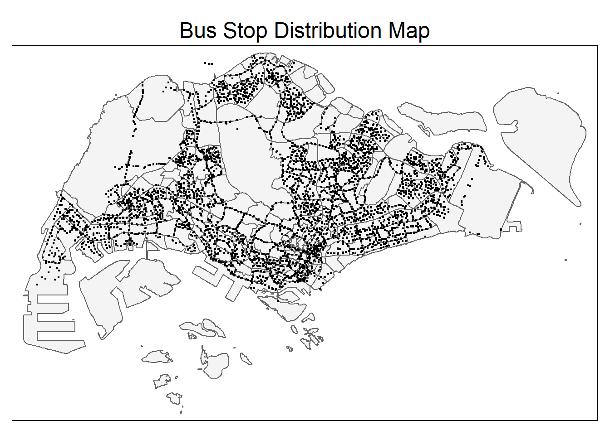
Train Station
Code
station <- st_read(dsn = '../data/geospatial',
layer = 'RapidTransitSystemStation') %>%
st_transform(crs = 3414)Reading layer `RapidTransitSystemStation' from data source
`C:\ameernoor\ISSS624\data\geospatial' using driver `ESRI Shapefile'
Simple feature collection with 220 features and 4 fields
Geometry type: POLYGON
Dimension: XY
Bounding box: xmin: 6068.209 ymin: 27478.44 xmax: 45377.5 ymax: 47913.58
Projected CRS: SVY21Code
# the data contain non closed ring, use st_is_valid to fix
station <- station %>%
filter(st_is_valid(.))
# check the data
glimpse(station)Rows: 217
Columns: 5
$ TYP_CD <int> 0, 0, 0, 0, 0, 0, 0, 0, 0, 0, 0, 0, 0, 0, 0, 0, 0, 0, 0, 0,…
$ STN_NAM <chr> NA, NA, NA, NA, NA, NA, NA, NA, NA, NA, NA, NA, NA, NA, NA,…
$ TYP_CD_DES <chr> "MRT", "MRT", "MRT", "MRT", "MRT", "LRT", "MRT", "MRT", "LR…
$ STN_NAM_DE <chr> "ESPLANADE MRT STATION", "PAYA LEBAR MRT STATION", "DHOBY G…
$ geometry <POLYGON [m]> POLYGON ((30566.07 30621.21..., POLYGON ((34495.6 3…the duplicate consider geometry as the unique value
Code
# check for duplicates based on unique id
if_else(n_distinct(station$geometry) == nrow(station), "no duplicates detected", "possible duplicates detected")[1] "no duplicates detected"all MRT Station location are unique
Code
# visualize the output
tm_shape(mpsz)+
tm_polygons(col = 'white', alpha = 0.01) +
tm_shape(station) +
tm_fill(col = 'green',
id = 'STN_NAM_DE') +
tm_layout(main.title = 'MRT Station Distribution Map', main.title.position = "center")
Train Exit
Code
trainexit <- st_read(dsn = '../data/geospatial',
layer = 'Train_Station_Exit_Layer') %>%
st_transform(crs = 3414)Reading layer `Train_Station_Exit_Layer' from data source
`C:\ameernoor\ISSS624\data\geospatial' using driver `ESRI Shapefile'
Simple feature collection with 565 features and 2 fields
Geometry type: POINT
Dimension: XY
Bounding box: xmin: 6134.086 ymin: 27499.7 xmax: 45356.36 ymax: 47865.92
Projected CRS: SVY21Code
glimpse(trainexit)Rows: 565
Columns: 3
$ stn_name <chr> "MACPHERSON MRT STATION", "MACPHERSON MRT STATION", "MACPHER…
$ exit_code <chr> "Exit A", "Exit B", "Exit C", "Exit B", "Exit A", "Exit A", …
$ geometry <POINT [m]> POINT (34285.07 34322.99), POINT (34382.15 34231.9), P…the duplicate consider geometry as the unique value
Code
# check for duplicates based on unique id
if_else(n_distinct(trainexit$geometry) == nrow(trainexit), "no duplicates detected", "possible duplicates detected")[1] "no duplicates detected"all MRT Station Exit location are unique
Code
# visualize the data
tm_shape(mpsz)+
tm_polygons(alpha = 0.5)+
tm_shape(trainexit)+
tm_dots(col = 'blue',
id = 'exit_id') +
tm_layout(main.title = 'Train Station Exit Distribution Map', main.title.position = "center")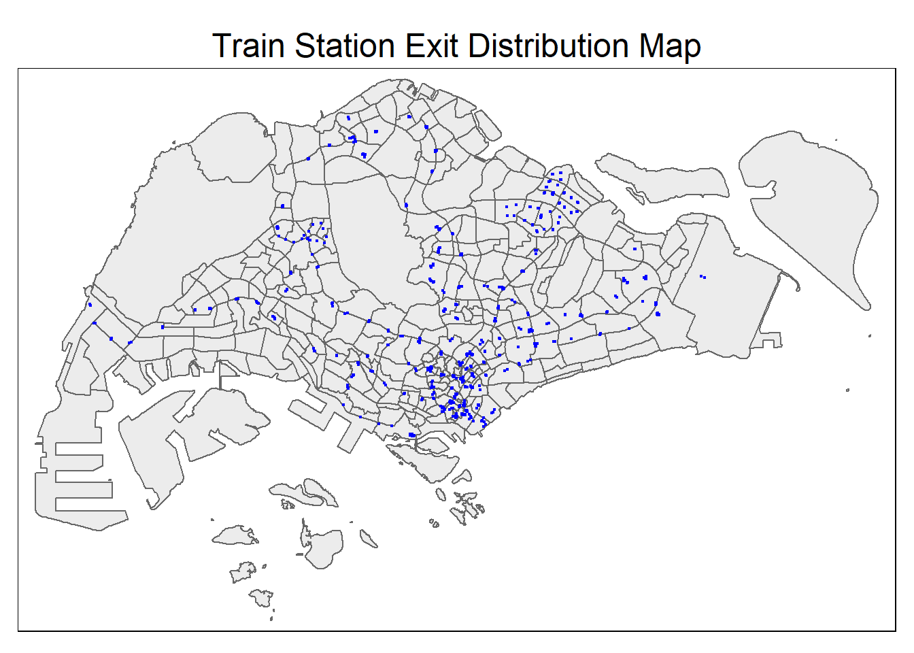
Business
Code
biz <- st_read(dsn = "../data/geospatial",
layer = "Business") %>%
st_transform(crs = 3414)Reading layer `Business' from data source `C:\ameernoor\ISSS624\data\geospatial' using driver `ESRI Shapefile'
Simple feature collection with 6550 features and 3 fields
Geometry type: POINT
Dimension: XY
Bounding box: xmin: 3669.148 ymin: 25408.41 xmax: 47034.83 ymax: 50148.54
Projected CRS: SVY21 / Singapore TMCode
glimpse(biz)Rows: 6,550
Columns: 4
$ POI_NAME <chr> "JOHN CHEN", "TROPICAL INDUSTRIAL BUILDING", "LIAN CHEONG I…
$ POI_ST_NUM <chr> "6", "14", "12", NA, "2", "21", "68", "68", NA, "14", "10",…
$ POI_ST_NAM <chr> "LITTLE RD", "LITTLE RD", "LITTLE RD", NA, "LITTLE RD", "LO…
$ geometry <POINT [m]> POINT (33818.36 35620.16), POINT (33770.51 35610.2), …considering some business might have branches, the duplicate condition here is only if all column value is the same
Code
# check for duplicates based on unique id
if_else(n_distinct(biz) == nrow(biz), "no duplicates detected", "possible duplicates detected")[1] "possible duplicates detected"show the duplicates
Code
# Subset rows where BUS_STOP_N has duplicates and arrange by BUS_STOP_N
duplicates <- biz[duplicated(biz) | duplicated(biz, fromLast = TRUE), ] %>%
arrange(POI_NAME)
# Display the sorted rows with duplicate BUS_STOP_N
head(duplicates)Simple feature collection with 2 features and 3 fields
Geometry type: POINT
Dimension: XY
Bounding box: xmin: 27455.94 ymin: 28233.69 xmax: 27455.94 ymax: 28233.69
Projected CRS: SVY21 / Singapore TM
POI_NAME POI_ST_NUM POI_ST_NAM geometry
1 KEPPEL DISTRIPARK 511 KG BAHRU RD POINT (27455.94 28233.69)
2 KEPPEL DISTRIPARK 511 KG BAHRU RD POINT (27455.94 28233.69)The output shows that it really is the same business.
The folowing code chunk will execute the duplicate removal and show the result where number of rows have reduced from 6550 to 6549
Code
# Keep one row of the duplicates in the original dataset
biz <- biz[!duplicated(biz) | duplicated(biz, fromLast = TRUE), ]
# Display the resulting dataset
glimpse(biz)Rows: 6,549
Columns: 4
$ POI_NAME <chr> "JOHN CHEN", "TROPICAL INDUSTRIAL BUILDING", "LIAN CHEONG I…
$ POI_ST_NUM <chr> "6", "14", "12", NA, "2", "21", "68", "68", NA, "14", "10",…
$ POI_ST_NAM <chr> "LITTLE RD", "LITTLE RD", "LITTLE RD", NA, "LITTLE RD", "LO…
$ geometry <POINT [m]> POINT (33818.36 35620.16), POINT (33770.51 35610.2), …visualize the distribution on the map
Code
# visualize the output
tm_shape(mpsz)+
tm_polygons(alpha = 0.01)+
tm_shape(biz)+
tm_dots(col = 'red') +
tm_layout(main.title = 'Business Distribution Map', main.title.position = "center")
Entertainment
Code
entertn <- st_read(dsn = '../data/geospatial',
layer = 'entertn') %>%
st_transform(crs = 3414)Reading layer `entertn' from data source `C:\ameernoor\ISSS624\data\geospatial' using driver `ESRI Shapefile'
Simple feature collection with 114 features and 3 fields
Geometry type: POINT
Dimension: XY
Bounding box: xmin: 10809.34 ymin: 26528.63 xmax: 41600.62 ymax: 46375.77
Projected CRS: SVY21 / Singapore TMCode
glimpse(entertn)Rows: 114
Columns: 4
$ POI_NAME <chr> "TP AUDITORIUM", "NP CONVENTION CENTRE", "SP AUDITORIUM", "…
$ POI_ST_NUM <chr> NA, NA, NA, "1", "350", NA, "201", NA, "83", "328", NA, "5"…
$ POI_ST_NAM <chr> NA, NA, NA, "FULLERTON SQ", "BALESTIER RD", "TRENGGANU ST",…
$ geometry <POINT [m]> POINT (39115.71 36392.13), POINT (21533.12 34921.34),…considering some entertainment might have branches, the duplicate condition here is only if all column value is the same
Code
# check for duplicates based on unique id
if_else(n_distinct(entertn) == nrow(entertn), "no duplicates detected", "possible duplicates detected")[1] "possible duplicates detected"show the duplicates
Code
# Subset rows where BUS_STOP_N has duplicates and arrange by BUS_STOP_N
duplicates <- entertn[duplicated(entertn) | duplicated(entertn, fromLast = TRUE), ] %>%
arrange(POI_NAME)
# Display the sorted rows with duplicateW
head(duplicates)Simple feature collection with 2 features and 3 fields
Geometry type: POINT
Dimension: XY
Bounding box: xmin: 30063.5 ymin: 30677.41 xmax: 30063.5 ymax: 30677.41
Projected CRS: SVY21 / Singapore TM
POI_NAME POI_ST_NUM POI_ST_NAM geometry
1 CAPITOL THEATRE 13 STAMFORD RD POINT (30063.5 30677.41)
2 CAPITOL THEATRE 13 STAMFORD RD POINT (30063.5 30677.41)The output shows that it really is the same entertainment
The folowing code chunk will execute the duplicate removal and show the result where number of rows have reduced from 114 to 113
Code
# Keep one row of the duplicates in the original dataset
entertn <- entertn[!duplicated(entertn) | duplicated(entertn, fromLast = TRUE), ]
# Display the resulting dataset
glimpse(entertn)Rows: 113
Columns: 4
$ POI_NAME <chr> "TP AUDITORIUM", "NP CONVENTION CENTRE", "SP AUDITORIUM", "…
$ POI_ST_NUM <chr> NA, NA, NA, "1", "350", NA, "201", NA, "83", "328", NA, "5"…
$ POI_ST_NAM <chr> NA, NA, NA, "FULLERTON SQ", "BALESTIER RD", "TRENGGANU ST",…
$ geometry <POINT [m]> POINT (39115.71 36392.13), POINT (21533.12 34921.34),…visualize the distribution on the map
Code
# visualize the output
tm_shape(mpsz)+
tm_polygons(alpha = 0.01)+
tm_shape(entertn)+
tm_dots(col = 'cyan',
id = 'POI_NAME') +
tm_layout(main.title = 'Entertainment Distribution Map', main.title.position = "center")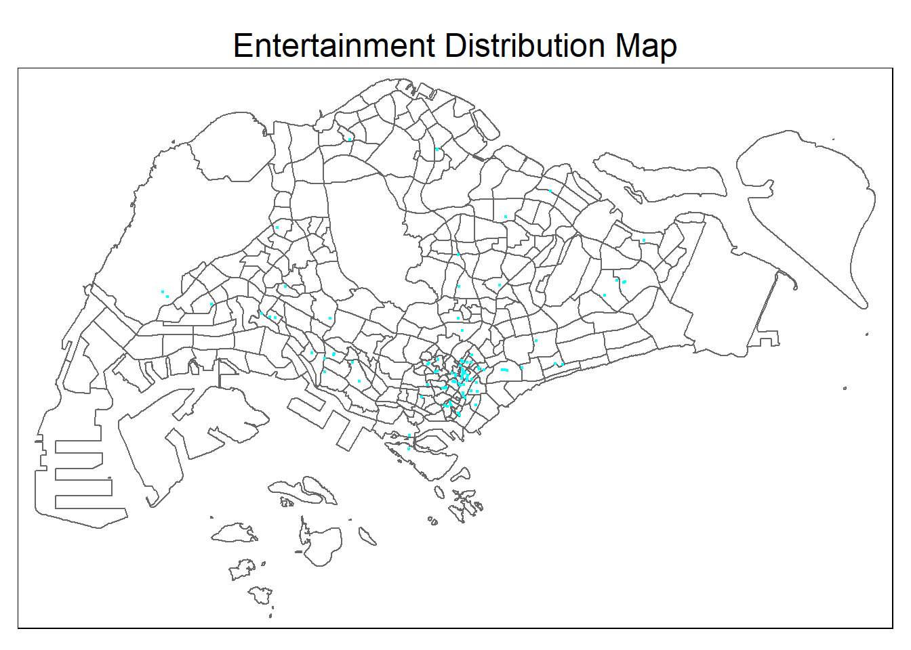
Food & Beverage
Code
fnb <- st_read(dsn = '../data/geospatial',
layer = 'F&B') %>%
st_transform(crs = 3414)Reading layer `F&B' from data source `C:\ameernoor\ISSS624\data\geospatial' using driver `ESRI Shapefile'
Simple feature collection with 1919 features and 3 fields
Geometry type: POINT
Dimension: XY
Bounding box: xmin: 6010.495 ymin: 25343.27 xmax: 45462.43 ymax: 48796.21
Projected CRS: SVY21 / Singapore TMCode
glimpse(fnb)Rows: 1,919
Columns: 4
$ POI_NAME <chr> "KHEL", "I PUB", "LARK LOUNGE & NITE-CLUB", "CHAKRAVARTHY",…
$ POI_ST_NUM <chr> "141", "14", "195", "195", "48", "36", "10", "697", "11", "…
$ POI_ST_NAM <chr> "KITCHENER RD", "CHUN TIN RD", "LAVENDER ST", "LAVENDER ST"…
$ geometry <POINT [m]> POINT (30654.44 32466.51), POINT (21515.34 36007.18),…considering some F & B might have branches, the duplicate condition here is only if all column value is the same
Code
# check for duplicates based on unique id
if_else(n_distinct(fnb) == nrow(fnb), "no duplicates detected", "possible duplicates detected")[1] "no duplicates detected"visualize the distribution on the map
Code
# visualize the output
tm_shape(mpsz)+
tm_polygons(alpha = 0.01)+
tm_shape(fnb)+
tm_dots(col = 'magenta',
id = 'POI_NAME') +
tm_layout(main.title = 'Food & Beverage Distribution Map', main.title.position = "center")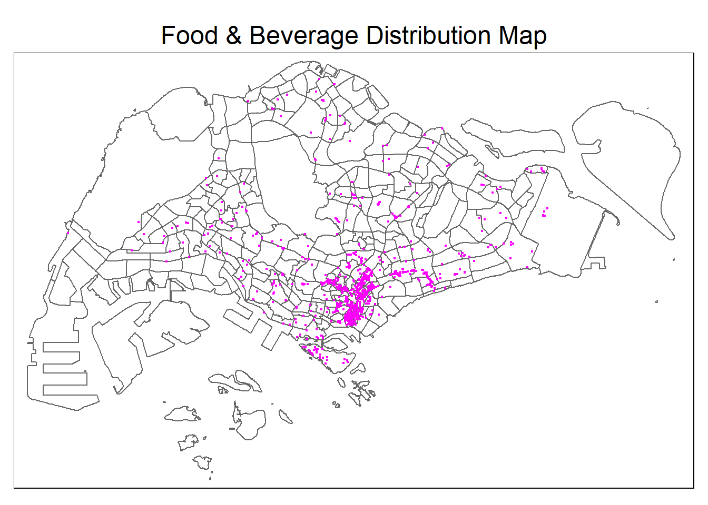
Financial Services
Code
finance <- st_read(dsn = '../data/geospatial',
layer = 'FinServ') %>%
st_transform(crs = 3414)Reading layer `FinServ' from data source `C:\ameernoor\ISSS624\data\geospatial' using driver `ESRI Shapefile'
Simple feature collection with 3320 features and 3 fields
Geometry type: POINT
Dimension: XY
Bounding box: xmin: 4881.527 ymin: 25171.88 xmax: 46526.16 ymax: 49338.02
Projected CRS: SVY21 / Singapore TMCode
glimpse(finance)Rows: 3,320
Columns: 4
$ POI_NAME <chr> "UOB", "POSB", "UOB", "OCBC", "OCBC", "MAYBANK", "ADPOST MO…
$ POI_ST_NUM <chr> "201", "375", "375", "375", NA, "707", "163", NA, "11", NA,…
$ POI_ST_NAM <chr> "YISHUN AVE 2", "COMMONWEALTH AVE", "COMMONWEALTH AVE", "CO…
$ geometry <POINT [m]> POINT (27966.77 44304.65), POINT (24163.96 31606.25),…considering some financial services might have branches, the duplicate condition here is only if all column value is the same
Code
# check for duplicates based on unique id
if_else(n_distinct(finance) == nrow(finance), "no duplicates detected", "possible duplicates detected")[1] "possible duplicates detected"show the duplicates
Code
# Subset rows for duplicates and arrange by POI_NAME and POI_ST_NAM
duplicates <- finance[duplicated(finance) | duplicated(finance, fromLast = TRUE), ] %>%
arrange(POI_NAME, POI_ST_NAM)
# Display the sorted rows with duplicatew
kable(head(duplicates, n=20))| POI_NAME | POI_ST_NUM | POI_ST_NAM | geometry |
|---|---|---|---|
| ANZ | NA | MARINE PARADE CENTRAL | POINT (36195.63 31542.21) |
| ANZ | NA | MARINE PARADE CENTRAL | POINT (36195.63 31542.21) |
| ANZ | 87 | MARINE PARADE CENTRAL | POINT (36057.62 31668.26) |
| ANZ | 87 | MARINE PARADE CENTRAL | POINT (36057.62 31668.26) |
| ANZ | 360 | ORCHARD RD | POINT (27714.14 31996.56) |
| ANZ | 360 | ORCHARD RD | POINT (27714.14 31996.56) |
| ANZ | 50 | RAFFLES PL | POINT (30017.88 29712.09) |
| ANZ | 50 | RAFFLES PL | POINT (30017.88 29712.09) |
| BANK OF CHINA | 4 | BATTERY RD | POINT (30113.59 29758.53) |
| BANK OF CHINA | 4 | BATTERY RD | POINT (30113.59 29758.53) |
| BANK OF CHINA | 60 | EU TONG SEN ST | POINT (29271.11 29829.29) |
| BANK OF CHINA | 60 | EU TONG SEN ST | POINT (29271.11 29829.29) |
| BANK OF CHINA | 133 | MIDDLE RD | POINT (30189.25 31295.52) |
| BANK OF CHINA | 133 | MIDDLE RD | POINT (30189.25 31295.52) |
| BANK OF CHINA | 83 | PUNGGOL CENTRAL | POINT (35606.57 43071.85) |
| BANK OF CHINA | 83 | PUNGGOL CENTRAL | POINT (35606.57 43071.85) |
| CIMB BANK | 270 | ORCHARD RD | POINT (28308.43 31676.99) |
| CIMB BANK | 270 | ORCHARD RD | POINT (28308.43 31676.99) |
| CIMB BANK | 50 | RAFFLES PL | POINT (30017.88 29712.09) |
| CIMB BANK | 50 | RAFFLES PL | POINT (30017.88 29712.09) |
The output shows that it really is the same financial service
The folowing code chunk will execute the duplicate removal and show the result where number of rows have reduced from 3320 to 3058
Code
# Keep one row of the duplicates in the original dataset
finance <- finance[!duplicated(finance) | duplicated(finance, fromLast = TRUE), ]
# Display the resulting dataset
glimpse(finance)Rows: 3,058
Columns: 4
$ POI_NAME <chr> "UOB", "POSB", "UOB", "OCBC", "OCBC", "MAYBANK", "ADPOST MO…
$ POI_ST_NUM <chr> "201", "375", "375", "375", NA, "707", "163", NA, "11", NA,…
$ POI_ST_NAM <chr> "YISHUN AVE 2", "COMMONWEALTH AVE", "COMMONWEALTH AVE", "CO…
$ geometry <POINT [m]> POINT (27966.77 44304.65), POINT (24163.96 31606.25),…visualize the distribution on the map
Code
# visualize the output
tm_shape(mpsz)+
tm_polygons(alpha = 0.01)+
tm_shape(finance)+
tm_dots(col = 'black',
id = 'POI_NAME') +
tm_layout(main.title = 'Financial Service Distribution Map', main.title.position = "center")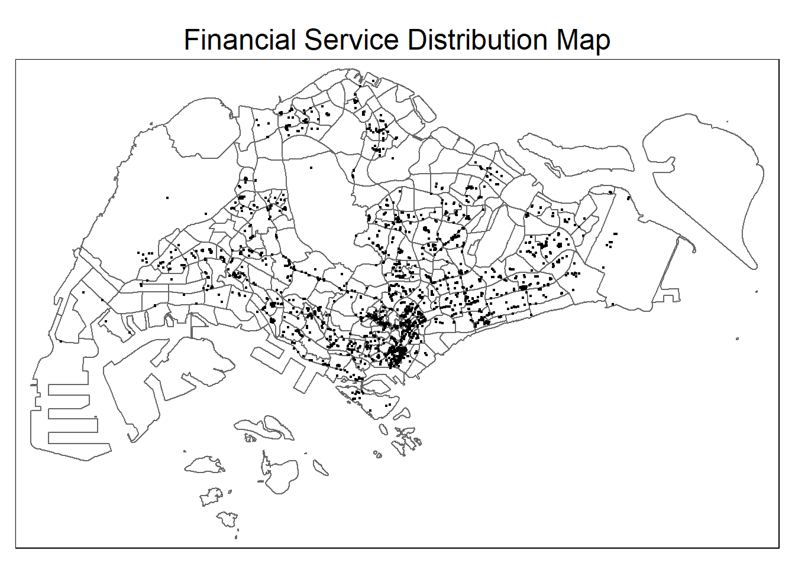
Leisure & Recreation
Code
lnr <- st_read(dsn = '../data/geospatial',
layer = 'Liesure&Recreation') %>%
st_transform(crs = 3414)Reading layer `Liesure&Recreation' from data source
`C:\ameernoor\ISSS624\data\geospatial' using driver `ESRI Shapefile'
Simple feature collection with 1217 features and 30 fields
Geometry type: POINT
Dimension: XY
Bounding box: xmin: 6010.495 ymin: 25134.28 xmax: 48439.77 ymax: 50078.88
Projected CRS: SVY21 / Singapore TMCode
glimpse(lnr)Rows: 1,217
Columns: 31
$ LINK_ID <dbl> 914885888, 1046871091, 845355245, 940657500, 940657500, 941…
$ POI_ID <dbl> 1192316147, 1132324271, 1132324254, 1110521716, 1110521715,…
$ SEQ_NUM <int> 1, 1, 1, 1, 1, 1, 1, 2, 1, 1, 1, 1, 1, 1, 1, 1, 1, 1, 1, 1,…
$ FAC_TYPE <int> 8410, 7997, 7997, 7997, 7997, 8410, 7997, 7997, 7997, 7997,…
$ POI_NAME <chr> "NIE ART GALLERY", "ASPIRE CONCEPT", "SOCCERPUNTER", "ANAND…
$ POI_LANGCD <chr> "ENG", "ENG", "ENG", "ENG", "ENG", "ENG", "ENG", "ENG", "EN…
$ POI_NMTYPE <chr> "B", "B", "B", "B", "B", "B", "B", "J", "B", "B", "B", "B",…
$ POI_ST_NUM <chr> NA, "883", "14", "1", "1", "39", NA, NA, "108", "11", "11",…
$ ST_NUM_FUL <chr> NA, NA, NA, NA, NA, NA, NA, NA, NA, NA, NA, "169A", NA, NA,…
$ ST_NFUL_LC <chr> NA, NA, NA, NA, NA, NA, NA, NA, NA, NA, NA, "ENG", NA, NA, …
$ ST_NAME <chr> "NANYANG CRES", "NORTH BRIDGE RD", "ROBINSON RD", "MARINE P…
$ ST_LANGCD <chr> "ENG", "ENG", "ENG", "ENG", "ENG", "ENG", NA, NA, "ENG", "E…
$ POI_ST_SD <chr> "R", "L", "L", "R", "R", "L", "R", "R", "L", "L", "L", "R",…
$ ACC_TYPE <chr> NA, NA, NA, NA, NA, NA, NA, NA, NA, NA, NA, NA, NA, NA, NA,…
$ PH_NUMBER <chr> NA, "66347769", NA, NA, "63446164", "63327591", "67659324",…
$ CHAIN_ID <dbl> 0, 0, 0, 0, 0, 0, 0, 0, 0, 0, 0, 0, 0, 0, 0, 0, 0, 0, 0, 0,…
$ NAT_IMPORT <chr> "N", "N", "N", "N", "N", "N", "N", "N", "N", "N", "N", "N",…
$ PRIVATE <chr> "N", "N", "N", "N", "N", "N", "N", "N", "N", "N", "N", "N",…
$ IN_VICIN <chr> "N", "N", "N", "N", "N", "N", "N", "N", "N", "N", "N", "N",…
$ NUM_PARENT <int> 0, 0, 0, 1, 1, 0, 0, 0, 0, 1, 1, 0, 0, 0, 1, 2, 0, 0, 0, 0,…
$ NUM_CHILD <int> 0, 0, 0, 0, 0, 0, 4, 4, 0, 0, 0, 0, 0, 0, 0, 0, 0, 0, 0, 1,…
$ PERCFRREF <int> NA, NA, NA, 43, 43, 51, 40, 40, NA, NA, 40, 99, 59, 15, NA,…
$ VANCITY_ID <dbl> 0, 0, 0, 0, 0, 0, 0, 0, 0, 0, 0, 0, 0, 0, 0, 0, 0, 0, 0, 0,…
$ ACT_ADDR <chr> NA, NA, NA, NA, NA, NA, "1 CHOA CHU KANG STREET 53 …
$ ACT_LANGCD <chr> NA, NA, NA, NA, NA, NA, "ENG", "ENG", NA, NA, NA, NA, NA, N…
$ ACT_ST_NAM <chr> NA, NA, NA, NA, NA, NA, "CHOA CHU KANG STREET 53", "CHOA CH…
$ ACT_ST_NUM <chr> NA, NA, NA, NA, NA, NA, "1", "1", NA, NA, NA, NA, NA, NA, N…
$ ACT_ADMIN <chr> NA, NA, NA, NA, NA, NA, "SINGAPORE", "SINGAPORE", NA, NA, N…
$ ACT_POSTAL <chr> NA, NA, NA, NA, NA, NA, "689236", "689236", NA, NA, NA, NA,…
$ ENTR_TYPE <chr> NA, NA, NA, NA, NA, NA, NA, NA, NA, NA, NA, NA, NA, NA, NA,…
$ geometry <POINT [m]> POINT (10664.66 36585.97), POINT (31490.24 32040.81),…Code
n_distinct(lnr$LINK_ID)[1] 908Code
n_distinct(lnr$POI_ID)[1] 1141Code
n_distinct(lnr$geometry)[1] 988considering some leisure & recreation might have branches, the duplicate condition here is only if all column value is the same
Code
# check for duplicates based on unique id
if_else(n_distinct(lnr) == nrow(lnr), "no duplicates detected", "possible duplicates detected")[1] "no duplicates detected"visualize the distribution on the map
Code
# visualize the output
tm_shape(mpsz)+
tm_polygons(alpha = 0.01)+
tm_shape(lnr)+
tm_dots(col = 'coral',
id = 'POI_NAME') +
tm_layout(main.title = 'Leisure & Recreation Distribution Map', main.title.position = "center")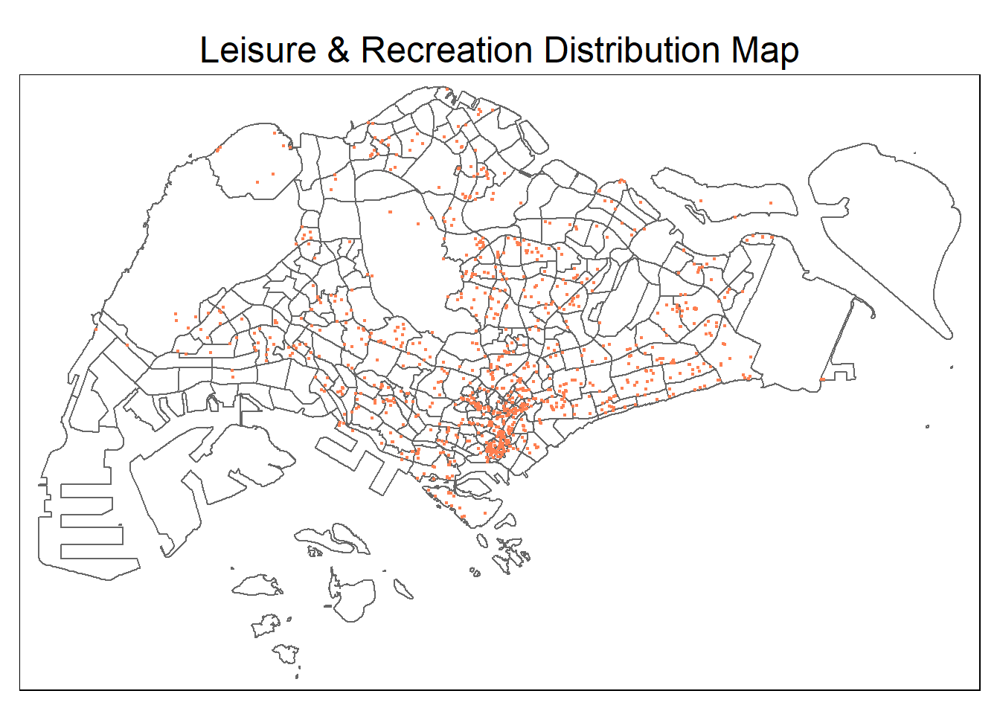
Retails
Code
retails <- st_read(dsn = '../data/geospatial',
layer = 'Retails') %>%
st_transform(crs = 3414)Reading layer `Retails' from data source `C:\ameernoor\ISSS624\data\geospatial' using driver `ESRI Shapefile'
Simple feature collection with 37635 features and 3 fields
Geometry type: POINT
Dimension: XY
Bounding box: xmin: 4737.982 ymin: 25171.88 xmax: 48265.04 ymax: 50135.28
Projected CRS: SVY21 / Singapore TMCode
glimpse(retails)Rows: 37,635
Columns: 4
$ POI_NAME <chr> "TIAN KEE & CO", "PEOPLE TRADITIONAL CHINESE MEDICAL", "RIV…
$ POI_ST_NUM <chr> "12", "12", NA, NA, "588", "243", "208", "267", "231", "158…
$ POI_ST_NAM <chr> "DAKOTA CRES", "DAKOTA CRES", NA, NA, "SERANGOON RD", "ALEX…
$ geometry <POINT [m]> POINT (33713.83 32023.15), POINT (33713.83 32023.15),…considering some financial services might have branches, the duplicate condition here is only if all column value is the same
Code
# check for duplicates based on unique id
if_else(n_distinct(retails) == nrow(retails), "no duplicates detected", "possible duplicates detected")[1] "possible duplicates detected"show the duplicates
Code
# Subset rows for duplicates and arrange by POI_NAME and POI_ST_NAM
duplicates <- retails[duplicated(retails) | duplicated(retails, fromLast = TRUE), ] %>%
arrange(POI_NAME, POI_ST_NAM)
# Display the sorted rows with duplicatew
kable(head(duplicates, n=20))| POI_NAME | POI_ST_NUM | POI_ST_NAM | geometry |
|---|---|---|---|
| 10 & 10 SPORTING CO. | 28 | KALLANG PL | POINT (31757.32 33054.78) |
| 10 & 10 SPORTING CO. | 28 | KALLANG PL | POINT (31757.32 33054.78) |
| 123 SALES | 662 | BUFFALO RD | POINT (29895.44 32149.16) |
| 123 SALES | 662 | BUFFALO RD | POINT (29895.44 32149.16) |
| AIK BAN HENG & TRADING | 456 | ANG MO KIO AVE 10 | POINT (30820.2 38832.31) |
| AIK BAN HENG & TRADING | 456 | ANG MO KIO AVE 10 | POINT (30820.2 38832.31) |
| AIK KIONG ENGINEERING CO | 90 | DUNLOP ST | POINT (30182.57 31993.25) |
| AIK KIONG ENGINEERING CO | 90 | DUNLOP ST | POINT (30182.57 31993.25) |
| ALEXANDRA CENTRAL | 321 | ALEXANDRA RD | POINT (24837.25 30020.6) |
| ALEXANDRA CENTRAL | 321 | ALEXANDRA RD | POINT (24837.25 30020.6) |
| ANACAONA | 128 | DUNLOP ST | POINT (30113.57 32037.48) |
| ANACAONA | 128 | DUNLOP ST | POINT (30113.57 32037.48) |
| ANTECH INTERNET CAFE | 44 | UPP DICKSON RD | POINT (30170.33 32060.7) |
| ANTECH INTERNET CAFE | 44 | UPP DICKSON RD | POINT (30170.33 32060.7) |
| BABY GUESS | 290 | ORCHARD RD | POINT (28306.21 31787.57) |
| BABY GUESS | 290 | ORCHARD RD | POINT (28306.21 31787.57) |
| BAN CHOON MEDICAL STORE | 130 | TELOK AYER ST | POINT (29649.5 29342.76) |
| BAN CHOON MEDICAL STORE | 130 | TELOK AYER ST | POINT (29649.5 29342.76) |
| BANG & OLUFSEN | 10 | SCOTTS RD | POINT (27957.87 32092.76) |
| BANG & OLUFSEN | 10 | SCOTTS RD | POINT (27957.87 32092.76) |
The output indicates that it really is the same retail business
The folowing code chunk will execute the duplicate removal and show the result where number of rows have reduced from 37635 to 37463
Code
# Keep one row of the duplicates in the original dataset
retails <- retails[!duplicated(retails) | duplicated(retails, fromLast = TRUE), ]
# Display the resulting dataset
glimpse(retails)Rows: 37,463
Columns: 4
$ POI_NAME <chr> "TIAN KEE & CO", "PEOPLE TRADITIONAL CHINESE MEDICAL", "RIV…
$ POI_ST_NUM <chr> "12", "12", NA, NA, "588", "243", "208", "267", "231", "158…
$ POI_ST_NAM <chr> "DAKOTA CRES", "DAKOTA CRES", NA, NA, "SERANGOON RD", "ALEX…
$ geometry <POINT [m]> POINT (33713.83 32023.15), POINT (33713.83 32023.15),…visualize the distribution on the map
Code
# visualize the output
tm_shape(mpsz) +
tm_polygons(alpha = 0.01) +
tm_shape(finance) +
tm_dots(col = 'lightcoral', id = 'POI_NAME') +
tm_layout(main.title="Retail Distribution Map", main.title.position = "center")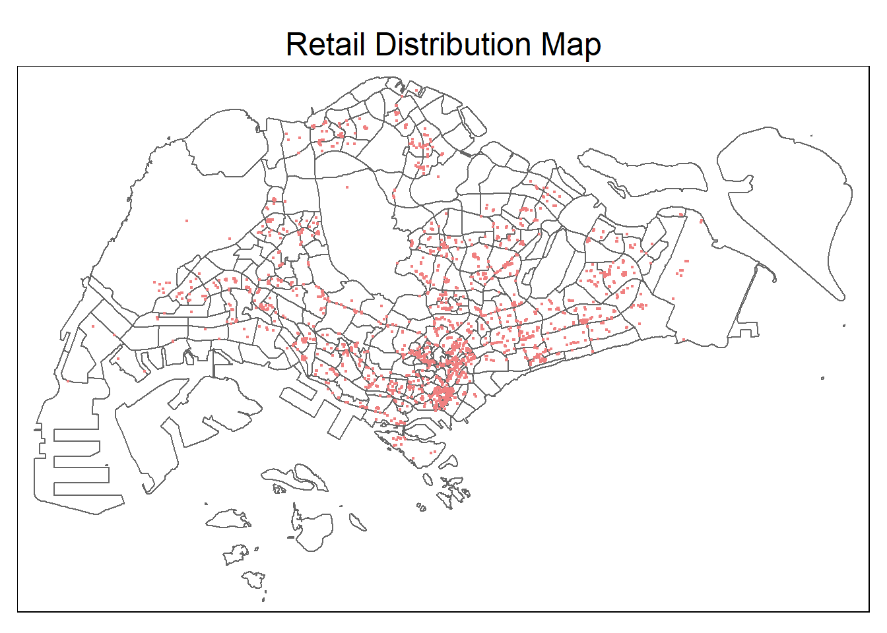
:::
Aspatial
This subsection will import the aspatial data used in this project and check it. The data includes Passenger Volume by Origin Destination Bus Stops and HDB data which explanations can be found in previous section.
Passenger Volume
Firstly, the following code will import the Passenger Volume by Origin Destination Bus Stops dataset. At the same time, it will also set the reference bus stop code data type to factor for easing compatibility issue and more efficient processing. As previously mentioned, this project will focus on weekday morning peak, so the code will also filter the data by that criteria, grouping it using the reference column, while summing the total trip for each unique grouped reference value. Finally, the code will generate output of summary statistics of the resulting dataset.
Code
# Load csv file
odb10 <- read_csv("../data/aspatial/origin_destination_bus_202310.csv.gz")
# change georeference data type into factors
odb10 <- odb10 %>%
mutate(
ORIGIN_PT_CODE = as.factor(ORIGIN_PT_CODE),
DESTINATION_PT_CODE = as.factor(DESTINATION_PT_CODE)
)
# filter and group the data
odb10 <- odb10 %>%
filter(DAY_TYPE == "WEEKDAY",
TIME_PER_HOUR >= 6 & TIME_PER_HOUR <= 9) %>%
group_by(ORIGIN_PT_CODE, DESTINATION_PT_CODE) %>%
summarise(TRIPS = sum(TOTAL_TRIPS))
# check the summary statistics of resulting dataframe
describe(odb10)odb10
3 Variables 242208 Observations
--------------------------------------------------------------------------------
ORIGIN_PT_CODE
n missing distinct
242208 0 5029
lowest : 01012 01013 01019 01029 01039, highest: 99139 99161 99171 99181 99189
--------------------------------------------------------------------------------
DESTINATION_PT_CODE
n missing distinct
242208 0 5043
lowest : 01012 01013 01019 01029 01039, highest: 99139 99161 99171 99181 99189
--------------------------------------------------------------------------------
TRIPS
n missing distinct Info Mean Gmd .05 .10
242208 0 3335 0.997 107.2 180.8 1 1
.25 .50 .75 .90 .95
3 15 57 187 373
lowest : 1 2 3 4 5, highest: 41201 46505 72829 74796 97600
--------------------------------------------------------------------------------
Functions
- read_csv from readr package reads a CSV file into R, converting it to a data frame.
- mutate from dplyr package is used to add new variables to a data frame or modify existing ones. Here, it converts
ORIGIN_PT_CODEandDESTINATION_PT_CODEto factors. - filter from dplyr package is used to subset rows based on specified conditions. In this code, it filters data for weekdays during morning peak hours (6 to 9 AM).
- group_by from dplyr package groups the data by specified columns, here by
ORIGIN_PT_CODEandDESTINATION_PT_CODE. - summarise from dplyr package calculates summary statistics for each group, in this case summing up
TOTAL_TRIPS. - describe from Hmisc package provides a detailed summary of an object’s contents, typically offering statistics like mean, standard deviation, frequency, and others.
How to Read the Output?
The data provides details about the origin and destination points, along with the corresponding number of total trips, time information, and categorization based on day types. The variable summaries indicate the data distribution, with details such as the unique values, frequency, and descriptive statistics for each column.
HDB
For the HDB dataset
Code
# Load csv file
hdb <- read_csv("../data/aspatial/hdb.csv")
# check the data
glimpse(hdb)Rows: 12,442
Columns: 37
$ ...1 <dbl> 0, 1, 2, 3, 4, 5, 6, 7, 8, 9, 10, 11, 12, 13, 14…
$ blk_no <chr> "1", "1", "1", "1", "1", "1", "1", "1", "1", "1"…
$ street <chr> "BEACH RD", "BEDOK STH AVE 1", "CANTONMENT RD", …
$ max_floor_lvl <dbl> 16, 14, 2, 15, 4, 25, 12, 14, 12, 2, 15, 15, 13,…
$ year_completed <dbl> 1970, 1975, 2010, 1982, 1975, 1982, 1975, 1977, …
$ residential <chr> "Y", "Y", "N", "Y", "Y", "Y", "Y", "Y", "Y", "N"…
$ commercial <chr> "Y", "N", "Y", "N", "Y", "N", "N", "N", "Y", "Y"…
$ market_hawker <chr> "N", "N", "N", "N", "N", "N", "N", "N", "N", "N"…
$ miscellaneous <chr> "N", "Y", "N", "N", "N", "N", "Y", "Y", "N", "N"…
$ multistorey_carpark <chr> "N", "N", "N", "N", "N", "N", "N", "N", "N", "N"…
$ precinct_pavilion <chr> "N", "N", "N", "N", "N", "N", "N", "N", "N", "N"…
$ bldg_contract_town <chr> "KWN", "BD", "CT", "BD", "PRC", "BM", "QT", "GL"…
$ total_dwelling_units <dbl> 142, 206, 0, 102, 55, 96, 125, 247, 95, 0, 220, …
$ `1room_sold` <dbl> 0, 0, 0, 0, 0, 0, 0, 0, 0, 0, 0, 0, 0, 0, 0, 0, …
$ `2room_sold` <dbl> 1, 0, 0, 0, 0, 0, 0, 0, 0, 0, 0, 0, 0, 0, 0, 0, …
$ `3room_sold` <dbl> 138, 204, 0, 0, 54, 0, 118, 0, 62, 0, 216, 214, …
$ `4room_sold` <dbl> 1, 0, 0, 10, 0, 0, 0, 0, 0, 0, 0, 0, 0, 0, 0, 0,…
$ `5room_sold` <dbl> 2, 2, 0, 92, 1, 96, 7, 0, 33, 0, 4, 5, 0, 4, 0, …
$ exec_sold <dbl> 0, 0, 0, 0, 0, 0, 0, 0, 0, 0, 0, 0, 0, 0, 0, 0, …
$ multigen_sold <dbl> 0, 0, 0, 0, 0, 0, 0, 0, 0, 0, 0, 0, 0, 0, 0, 0, …
$ studio_apartment_sold <dbl> 0, 0, 0, 0, 0, 0, 0, 0, 0, 0, 0, 0, 0, 0, 0, 0, …
$ `1room_rental` <dbl> 0, 0, 0, 0, 0, 0, 0, 0, 0, 0, 0, 0, 319, 0, 0, 0…
$ `2room_rental` <dbl> 0, 0, 0, 0, 0, 0, 0, 247, 0, 0, 0, 0, 0, 0, 56, …
$ `3room_rental` <dbl> 0, 0, 0, 0, 0, 0, 0, 0, 0, 0, 0, 0, 0, 0, 14, 1,…
$ other_room_rental <dbl> 0, 0, 0, 0, 0, 0, 0, 0, 0, 0, 0, 0, 0, 0, 14, 0,…
$ lat <dbl> 1.295097, 1.320852, 1.275488, 1.327969, 1.388610…
$ lng <dbl> 103.8541, 103.9337, 103.8414, 103.9227, 103.9881…
$ building <chr> "RAFFLES HOTEL", "NIL", "PINNACLE @ DUXTON", "PI…
$ addr <chr> "1 BEACH ROAD RAFFLES HOTEL SINGAPORE 189673", "…
$ postal <chr> "189673", "460001", "080001", "461001", "500001"…
$ SUBZONE_NO <dbl> 2, 6, 3, 3, 1, 9, 10, 5, 3, 5, 1, 5, 2, 2, 1, 7,…
$ SUBZONE_N <chr> "CITY HALL", "BEDOK SOUTH", "CHINATOWN", "KEMBAN…
$ SUBZONE_C <chr> "DTSZ02", "BDSZ06", "OTSZ03", "BDSZ03", "CHSZ01"…
$ PLN_AREA_N <chr> "DOWNTOWN CORE", "BEDOK", "OUTRAM", "BEDOK", "CH…
$ PLN_AREA_C <chr> "DT", "BD", "OT", "BD", "CH", "BM", "QT", "GL", …
$ REGION_N <chr> "CENTRAL REGION", "EAST REGION", "CENTRAL REGION…
$ REGION_C <chr> "CR", "ER", "CR", "ER", "ER", "CR", "CR", "CR", …visualize the distribution
Code
hdb_sf <- st_as_sf(hdb,
coords = c("lng", "lat"),
crs = 4326) %>%
st_transform(crs = 3414)
# visualize the output
tm_shape(mpsz)+
tm_polygons(col = 'white', alpha = 0.01) +
tm_shape(hdb_sf) +
tm_dots(col = 'lightblue',
id = 'building') +
tm_layout(main.title = 'HDB Distribution Map', main.title.position = "center")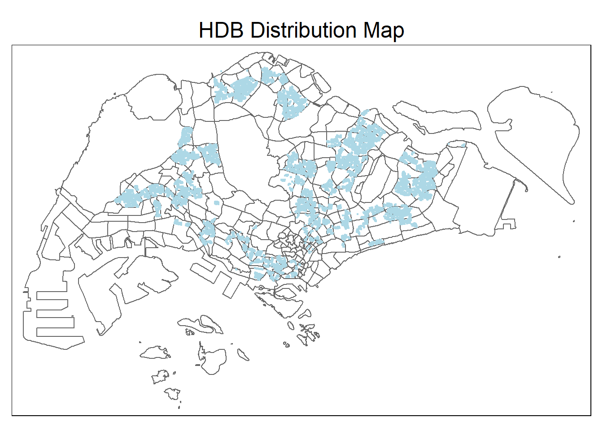
School
For the School dataset
Geocoding is the conversion of an address or postal code into geographic coordinates, typically latitude and longitude. The Singapore Land Authority offers the OneMap API, specifically the Search API, which retrieves latitude, longitude, and x,y coordinates for a given address or postal code.
To perform geocoding using the SLA OneMap API, the provided code, written in R, reads input data from a CSV file using the read_csv function from the readr package. The httr package’s HTTP call functions are then used to send individual records to the OneMap geocoding server.
The geocoding process creates two data frames: found for successfully geocoded records and not_found for those that failed. The found data table is joined with the initial CSV data table using a unique identifier (POSTAL) and saved as a new CSV file named found.
Code
url <- "https://www.onemap.gov.sg/api/common/elastic/search"
csv <- read_csv("../data/aspatial/Generalinformationofschools.csv")
postcodes <- csv$postal_code
found <- data.frame()
not_found <- data.frame()
for(postcode in postcodes){
query <-list('searchVal' = postcode, 'returnGeom'='Y', 'getAddrDetails'='Y', 'pageNum' = '1')
res <- GET(url, query=query)
if((content(res)$found)!=0)
found<-rbind(found, data.frame(content(res))[4:13])
else {
not_found = data.frame(postcode)
}
}
glimpse(found)Rows: 345
Columns: 10
$ results.SEARCHVAL <chr> "THE LEARNING HARBOUR @ ADMIRALTY PRIMARY SCHOOL", "…
$ results.BLK_NO <chr> "11", "31", "10", "751", "100", "2A", "31", "19", "1…
$ results.ROAD_NAME <chr> "WOODLANDS CIRCLE", "WOODLANDS CRESCENT", "YISHUN ST…
$ results.BUILDING <chr> "THE LEARNING HARBOUR @ ADMIRALTY PRIMARY SCHOOL", "…
$ results.ADDRESS <chr> "11 WOODLANDS CIRCLE THE LEARNING HARBOUR @ ADMIRALT…
$ results.POSTAL <chr> "738907", "737916", "768643", "768928", "579646", "1…
$ results.X <chr> "24315.9398124339", "24559.0472937012", "27958.13714…
$ results.Y <chr> "47135.3542042952", "47504.7873554379", "46096.26276…
$ results.LATITUDE <chr> "1.44254963931583", "1.44589068910993", "1.433152715…
$ results.LONGITUDE <chr> "103.800213682734", "103.802398196596", "103.8329424…Code
schools = merge(csv, found, by.x = 'postal_code', by.y = 'results.POSTAL', all = TRUE)
# manually add the Zhenghua Secondary School data
schools[schools$school_name == "ZHENGHUA SECONDARY SCHOOL", "results.LATITUDE"] <- 1.3887
schools[schools$school_name == "ZHENGHUA SECONDARY SCHOOL", "results.LONGITUDE"] <- 103.7652
# check the output
glimpse(schools)Rows: 350
Columns: 40
$ postal_code <chr> "088256", "099138", "099757", "099840", "109100", "…
$ school_name <chr> "CANTONMENT PRIMARY SCHOOL", "CHIJ ST. THERESA'S CO…
$ url_address <chr> "http://www.cantonmentpri.moe.edu.sg", "http://www.…
$ address <chr> "1 Cantonment Close", "160 LOWER DELTA ROAD", "…
$ telephone_no <chr> "65119555", "64775777", "62730096", "62733937", "62…
$ telephone_no_2 <chr> "na", "na", "na", "na", "na", "na", "na", "na", "na…
$ fax_no <chr> "65119556", "64775700", "62731710", "62763083", "62…
$ fax_no_2 <chr> "na", "na", "na", "na", "na", "na", "na", "na", "na…
$ email_address <chr> "cantonment_ps@moe.edu.sg", "CHIJSTCS@MOE.EDU.SG", …
$ mrt_desc <chr> "Tanjong Pagar Outram Park", "HARBOURFRONT MRT, TIO…
$ bus_desc <chr> "75, 167, 196", "65, 121, 123, 123M, 124, 131, 131M…
$ principal_name <chr> "MRS MANOKARA SUGUNAVATHI", "MDM TAN MEI MEI JENNY"…
$ first_vp_name <chr> "MRS AUDREA CHIN", "MDM ONG LEE LEE", "MS NG CHIOU …
$ second_vp_name <chr> "MISS CHENG SHIN MIIN", "MISS KUO ZHAOYAN, FELICIA"…
$ third_vp_name <chr> "NULL", "NULL", "NULL", "NULL", "NULL", "NULL", "NU…
$ fourth_vp_name <chr> "NULL", "NULL", "NULL", "NULL", "NULL", "NULL", "NU…
$ fifth_vp_name <chr> "NULL", "NULL", "NULL", "NULL", "NULL", "NULL", "NU…
$ sixth_vp_name <chr> "NULL", "NULL", "NULL", "NULL", "NULL", "NULL", "NU…
$ dgp_code <chr> "BUKIT MERAH", "BUKIT MERAH", "BUKIT MERAH", "BUKIT…
$ zone_code <chr> "SOUTH", "SOUTH", "SOUTH", "SOUTH", "SOUTH", "SOUTH…
$ type_code <chr> "GOVERNMENT SCHOOL", "GOVERNMENT-AIDED SCH", "GOVER…
$ nature_code <chr> "CO-ED SCHOOL", "GIRLS' SCHOOL", "GIRLS' SCHOOL", "…
$ session_code <chr> "SINGLE SESSION", "SINGLE SESSION", "SINGLE SESSION…
$ mainlevel_code <chr> "PRIMARY", "SECONDARY", "PRIMARY", "PRIMARY", "PRIM…
$ sap_ind <chr> "No", "No", "No", "No", "No", "No", "No", "No", "Ye…
$ autonomous_ind <chr> "No", "No", "No", "No", "No", "No", "No", "No", "No…
$ gifted_ind <chr> "No", "No", "No", "No", "No", "No", "No", "No", "Ye…
$ ip_ind <chr> "No", "No", "No", "No", "No", "No", "No", "No", "No…
$ mothertongue1_code <chr> "Chinese", "Chinese", "Chinese", "Chinese", "Chines…
$ mothertongue2_code <chr> "Malay", "Malay", "Malay", "Malay", "Malay", "Malay…
$ mothertongue3_code <chr> "Tamil", "Tamil", "Tamil", "Tamil", "Tamil", "na", …
$ results.SEARCHVAL <chr> "KIDZ TREEHOUSE @ CANTONMENT", "CHIJ SAINT THERESA'…
$ results.BLK_NO <chr> "1", "160", "1", "1", "91", "147", "301", "50", "30…
$ results.ROAD_NAME <chr> "CANTONMENT CLOSE", "LOWER DELTA ROAD", "BUKIT TERE…
$ results.BUILDING <chr> "KIDZ TREEHOUSE @ CANTONMENT", "CHIJ SAINT THERESA'…
$ results.ADDRESS <chr> "1 CANTONMENT CLOSE KIDZ TREEHOUSE @ CANTONMENT SIN…
$ results.X <chr> "28748.1620587641", "26789.3781491434", "27402.9654…
$ results.Y <chr> "28659.9995642845", "28647.4426490944", "28579.8478…
$ results.LATITUDE <chr> "1.27546534984202", "1.27535177510054", "1.27474048…
$ results.LONGITUDE <chr> "103.840041087946", "103.822440701642", "103.827954…visualize the distribution
Code
schools_sf <- schools %>%
rename(
latitude = "results.LATITUDE",
longitude = "results.LONGITUDE"
) %>%
select(
postal_code,
school_name,
latitude,
longitude
) %>%
st_as_sf(
coords = c("longitude", "latitude"),
crs=4326
) %>%
st_transform(
crs = 3414
)
# visualize the output
tm_shape(mpsz)+
tm_polygons(col = 'white', alpha = 0.01) +
tm_shape(schools_sf) +
tm_dots(col = 'lightgreen',
id = 'building') +
tm_layout(main.title = 'Schools Distribution Map', main.title.position = "center")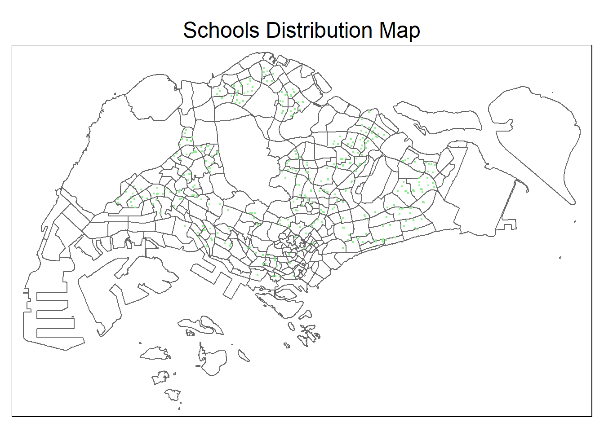
3 Data Wrangling
3.1 Create Hexagon Layer
Code
# Create hexagonal grid based on bus stop locations
hexagonal_grid <- st_make_grid(busstop,
cellsize = 750,
what = "polygons",
square = FALSE)
# Convert hexagonal grid to spatial dataframe
hex_grid_sf <- st_sf(hex_grid = hexagonal_grid) %>%
mutate(hexagon_id = 1:length(lengths(hexagonal_grid)))
# Count the number of bus stops within each hexagon
hex_grid_sf$num_bus_stops = lengths(st_intersects(hex_grid_sf, busstop))
# Filter hexagons with at least one bus stop
hexagons_with_bus_stops <- filter(hex_grid_sf, num_bus_stops > 0)
# check the output
glimpse(hexagons_with_bus_stops)Rows: 834
Columns: 3
$ hex_grid <POLYGON [m]> POLYGON ((3970.122 27348.13..., POLYGON ((4345.1…
$ hexagon_id <int> 23, 44, 46, 66, 67, 68, 86, 87, 88, 89, 90, 109, 110, 11…
$ num_bus_stops <int> 1, 1, 2, 1, 4, 1, 1, 1, 4, 2, 1, 3, 2, 5, 2, 1, 1, 5, 3,…visualize the output
Code
# Plot the number of bus stops per hexagon with a color gradient and legend
tm_shape(hexagons_with_bus_stops) +
tm_borders() +
tm_fill("num_bus_stops",
title = "Bus Stop Density",
style = "jenks",
palette = "YlOrRd",
legend.show = TRUE) +
tm_layout(main.title = 'Bus Stop Density in Hexagonal Grid',
main.title.position = "center",
legend.position = c("right", "top"))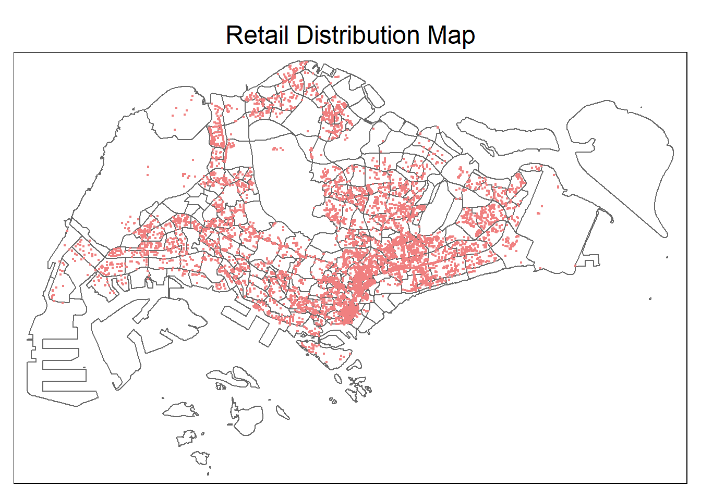
3.2 Combine Bus Stop and Hexagon
Code
# Perform a spatial join
busstop_with_hex_info <- st_join(busstop, hexagons_with_bus_stops, by = NULL, join = st_within)
# Select the relevant columns
busstop_with_hex_info <- busstop_with_hex_info %>%
select(BUS_STOP_N, BUS_ROOF_N, LOC_DESC, hexagon_id, geometry) %>%
mutate(
BUS_STOP_N = as.factor(BUS_STOP_N)
)
# Display the resulting data
glimpse(busstop_with_hex_info)Rows: 5,144
Columns: 5
$ BUS_STOP_N <fct> 22069, 32071, 44331, 96081, 11561, 66191, 23389, 54411, 285…
$ BUS_ROOF_N <chr> "B06", "B23", "B01", "B05", "B05", "B03", "B02A", "B02", "B…
$ LOC_DESC <chr> "OPP CEVA LOGISTICS", "AFT TRACK 13", "BLK 239", "GRACE IND…
$ hexagon_id <int> 573, 560, 977, 2129, 1159, 1543, 509, 1502, 660, 2150, 448,…
$ geometry <POINT [m]> POINT (13576.31 32883.65), POINT (13228.59 44206.38),…3.3 Combine Trips and Hexagon
Code
# Add origin_hex to odb10
odb_hex <- odb10 %>%
left_join(busstop_with_hex_info %>% select(BUS_STOP_N, hexagon_id),
by = c("ORIGIN_PT_CODE" = "BUS_STOP_N")) %>%
rename(origin_hex = hexagon_id)
# Add destination_hex to odb10
odb_hex <- odb_hex %>%
left_join(busstop_with_hex_info %>% select(BUS_STOP_N, hexagon_id),
by = c("DESTINATION_PT_CODE" = "BUS_STOP_N")) %>%
rename(destination_hex = hexagon_id)
# Remove additional geometry columns
odb_hex <- odb_hex %>%
select(-contains("geometry."))
# Convert hex id to factor
odb_hex <- odb_hex %>%
mutate(
origin_hex = as.factor(origin_hex),
destination_hex = as.factor(destination_hex)
)
# check the output
glimpse(odb_hex)Rows: 242,208
Columns: 5
Groups: ORIGIN_PT_CODE [5,029]
$ ORIGIN_PT_CODE <fct> 01012, 01012, 01012, 01012, 01012, 01012, 01012, 0…
$ DESTINATION_PT_CODE <fct> 01112, 01113, 01121, 01211, 01311, 07371, 60011, 6…
$ TRIPS <dbl> 290, 118, 77, 118, 165, 14, 30, 16, 35, 26, 2, 8, …
$ origin_hex <fct> 1474, 1474, 1474, 1474, 1474, 1474, 1474, 1474, 14…
$ destination_hex <fct> 1496, 1496, 1538, 1538, 1559, 1559, 1539, 1581, 16…3.4 Final Duplicate Checking
Code
if_else(n_distinct(odb_hex) == nrow(odb_hex), "no duplicates detected", "possible duplicates detected")[1] "no duplicates detected"3.5 Construct O-D Matrix
Code
# Remove rows with missing values
clean_odb <- odb_hex[complete.cases(odb_hex), ]
# Aggregate data based on origin_hex and destination_hex
odb_flow <- clean_odb %>%
group_by(origin_hex, destination_hex) %>%
summarise(trips = sum(TRIPS),
origin_hex = unique(origin_hex),
destination_hex = unique(destination_hex)) %>%
ungroup()
# check the output
glimpse(odb_flow)Rows: 65,510
Columns: 3
$ origin_hex <fct> 1474, 1474, 1474, 1474, 1474, 1474, 1474, 1474, 1474, …
$ destination_hex <fct> 1496, 1538, 1539, 1559, 1581, 1582, 1601, 1602, 1603, …
$ trips <dbl> 1091, 766, 230, 311, 32, 63, 153, 77, 29, 127, 218, 15…3.6 Create Distance Variable
Code
# set busstop to spatial
busstop_sp <- as(busstop_with_hex_info, "Spatial")
# calculate the distance
tp_dist <- sp::spDists(busstop_sp, longlat = FALSE)
# add column names to the variable
hex_id_names <- busstop_sp$hexagon_id
colnames(tp_dist) <- paste0(hex_id_names)
rownames(tp_dist) <- paste0(hex_id_names)
# melt the table
dist <- reshape2::melt(tp_dist) %>%
rename(origin_hex = Var1,
destination_hex = Var2,
distance = value) %>%
mutate(origin_hex = as.factor(origin_hex),
destination_hex = as.factor(destination_hex))
# remove duplicates
dist <- distinct(dist, origin_hex, destination_hex, .keep_all = TRUE)
# Perform left join to odb_flow with factor conversion
odb_flow <- odb_flow %>%
left_join(
dist %>% select(origin_hex, destination_hex, distance) %>%
mutate(across(c(origin_hex, destination_hex), as.character)),
by = c("origin_hex", "destination_hex")
) %>%
mutate(across(c(origin_hex, destination_hex), as.factor))
# check the output
glimpse(odb_flow)Rows: 65,510
Columns: 4
$ origin_hex <fct> 1474, 1474, 1474, 1474, 1474, 1474, 1474, 1474, 1474, …
$ destination_hex <fct> 1496, 1538, 1539, 1559, 1581, 1582, 1601, 1602, 1603, …
$ trips <dbl> 1091, 766, 230, 311, 32, 63, 153, 77, 29, 127, 218, 15…
$ distance <dbl> 337.7979, 1089.6612, 1816.6628, 1553.0464, 2308.2822, …3.7 Remove Intra-Zonal Flows
the following code chunk will remove intra-zonal flows
Code
odb_flow <- odb_flow %>%
filter(as.character(origin_hex) != as.character(destination_hex))
# check the output
glimpse(odb_flow)Rows: 64,885
Columns: 4
$ origin_hex <fct> 1474, 1474, 1474, 1474, 1474, 1474, 1474, 1474, 1474, …
$ destination_hex <fct> 1496, 1538, 1539, 1559, 1581, 1582, 1601, 1602, 1603, …
$ trips <dbl> 1091, 766, 230, 311, 32, 63, 153, 77, 29, 127, 218, 15…
$ distance <dbl> 337.7979, 1089.6612, 1816.6628, 1553.0464, 2308.2822, …
Why intra-zonal flows is removed?
The exclusion of intra-zonal flows from the Spatial Interaction Model calibration process is likely driven by the desire to focus on modeling and understanding interactions between different zones, without interference from flows within the same zone.
Intra-zonal flows, representing movements within a single zone, may not contribute significantly to the overall spatial interaction patterns that the model aims to capture. By removing intra-zonal flows, the analysis can concentrate on the dynamics and factors influencing interactions between distinct zones, providing a clearer and more interpretable representation of spatial relationships.
Including intra-zonal flows in the model might introduce unnecessary complexity or noise, potentially affecting the accuracy and interpretability of the model’s results. Therefore, excluding intra-zonal flows is a methodological choice to streamline the analysis and enhance the model’s ability to capture meaningful inter-zonal interactions.
4 Visualize the Desire Lines
firstly, create the line
There are important arguments in od2line:
flow: A data frame representing the origin-destination data. The first column should be the same as the first column of the data in the zones dataframe.
zones: The origin and destination of the travels should be passed here.
zone_code: Name of the variable in zones containing the ids of the zones.
Code
flowline <- od2line(flow = odb_flow,
zones = hexagons_with_bus_stops,
zone_code = 'hexagon_id')
glimpse(flowline)Rows: 64,885
Columns: 5
$ origin_hex <fct> 1474, 1474, 1474, 1474, 1474, 1474, 1474, 1474, 1474, …
$ destination_hex <fct> 1496, 1538, 1539, 1559, 1581, 1582, 1601, 1602, 1603, …
$ trips <dbl> 1091, 766, 230, 311, 32, 63, 153, 77, 29, 127, 218, 15…
$ distance <dbl> 337.7979, 1089.6612, 1816.6628, 1553.0464, 2308.2822, …
$ geometry <LINESTRING [m]> LINESTRING (29845.12 31028...., LINESTRING …4.1 3rd Quantile Trips (175)
Code
summary(flowline$trips) Min. 1st Qu. Median Mean 3rd Qu. Max.
1.0 7.0 38.0 375.7 175.0 97602.0 since trips without filter will be too messy, first trial will use the third quantile
Code
tmap_mode('plot')
tmap_options(check.and.fix = TRUE)
tm_shape(mpsz) +
tm_polygons(col = 'white') +
tm_shape(hexagons_with_bus_stops) +
tm_polygons(alpha = 0.4,
col = 'gray') +
flowline %>%
filter(trips >= 175) %>%
tm_shape() +
tm_lines(col = 'coral',
lwd = "trips",
scale = c(0.1, 1, 2, 3, 4, 5, 6, 7),
alpha = 0.2)+
tm_layout(main.title = 'Weekday Morning Peak Flow for 3rd Quantile Trips', main.title.position = 'center')busier in central and east
4.2 99th Quantile Trips (6082)
Code
quantile(flowline$trips, probs = seq(0, 1, 0.01), na.rm = TRUE) 0% 1% 2% 3% 4% 5% 6% 7%
1.00 1.00 1.00 1.00 1.00 1.00 1.00 1.00
8% 9% 10% 11% 12% 13% 14% 15%
2.00 2.00 2.00 2.00 2.00 2.00 3.00 3.00
16% 17% 18% 19% 20% 21% 22% 23%
3.00 4.00 4.00 4.00 5.00 5.00 6.00 6.00
24% 25% 26% 27% 28% 29% 30% 31%
7.00 7.00 8.00 8.00 9.00 10.00 11.00 12.00
32% 33% 34% 35% 36% 37% 38% 39%
13.00 13.00 14.00 15.00 16.00 18.00 19.00 20.00
40% 41% 42% 43% 44% 45% 46% 47%
21.00 22.00 24.00 25.00 27.00 28.00 30.00 32.00
48% 49% 50% 51% 52% 53% 54% 55%
33.00 35.00 38.00 40.00 42.00 45.00 47.00 50.00
56% 57% 58% 59% 60% 61% 62% 63%
53.00 57.00 60.00 64.00 67.00 71.00 76.00 81.00
64% 65% 66% 67% 68% 69% 70% 71%
86.00 91.00 97.00 103.00 110.00 117.00 125.00 134.00
72% 73% 74% 75% 76% 77% 78% 79%
143.00 153.00 163.00 175.00 188.00 202.00 217.00 233.00
80% 81% 82% 83% 84% 85% 86% 87%
254.00 276.00 301.00 327.00 357.00 391.00 429.24 475.00
88% 89% 90% 91% 92% 93% 94% 95%
523.00 586.00 661.00 747.44 854.00 998.00 1170.00 1413.80
96% 97% 98% 99% 100%
1766.00 2335.44 3384.32 6082.16 97602.00 Code
tmap_mode('plot')
tmap_options(check.and.fix = TRUE)
tm_shape(mpsz) +
tm_polygons(col = 'white') +
tm_shape(hexagons_with_bus_stops) +
tm_polygons(alpha = 0.4,
col = 'gray') +
flowline %>%
filter(trips >= 6082) %>%
tm_shape() +
tm_lines(col = 'coral',
lwd = "trips",
scale = c(0.1, 1, 2, 3, 4, 5, 6, 7))+
tm_layout(main.title = 'Weekday Morning Peak Flow for 99th Percentile Trips', main.title.position = 'center',
main.title.size = 1.2)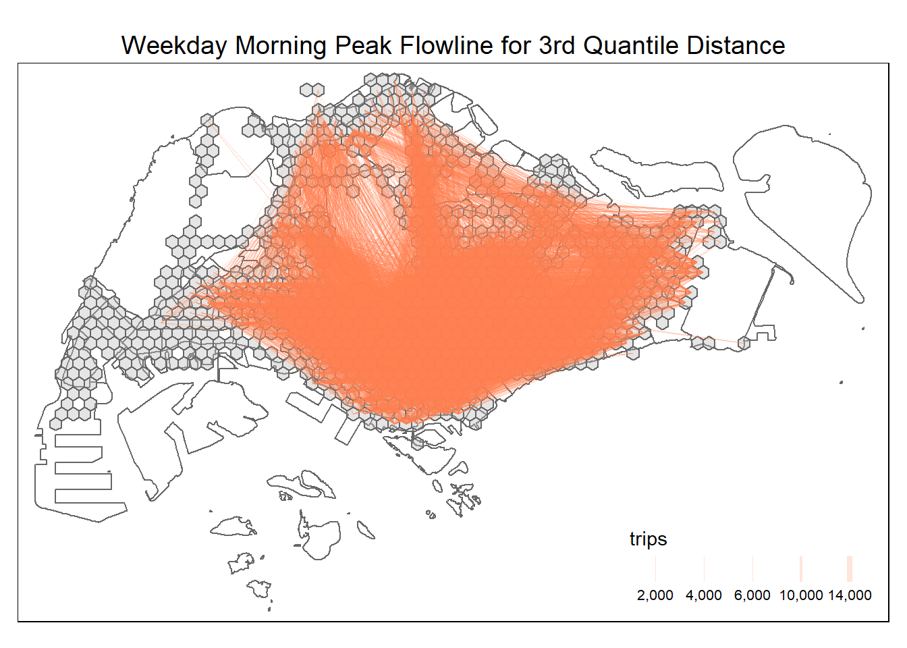
north-downtown and north-east becomes more visible
4.3 3rd Quantile Distance (8923)
Code
summary(flowline$distance) Min. 1st Qu. Median Mean 3rd Qu. Max.
36.87 2975.46 5478.89 6347.13 8923.04 25292.04 since trips without filter will be too messy, first trial will use the third quantile
Code
tmap_mode('plot')
tmap_options(check.and.fix = TRUE)
tm_shape(mpsz) +
tm_polygons(col = 'white') +
tm_shape(hexagons_with_bus_stops) +
tm_polygons(alpha = 0.4,
col = 'gray') +
flowline %>%
filter(distance >= 8923) %>%
tm_shape() +
tm_lines(col = 'coral',
lwd = "trips",
scale = c(0.1, 1, 2, 3, 4, 5, 6, 7),
alpha = 0.2)+
tm_layout(main.title = 'Weekday Morning Peak Flowline for 3rd Quantile Distance', main.title.position = 'center',
main.title.size = 1.2)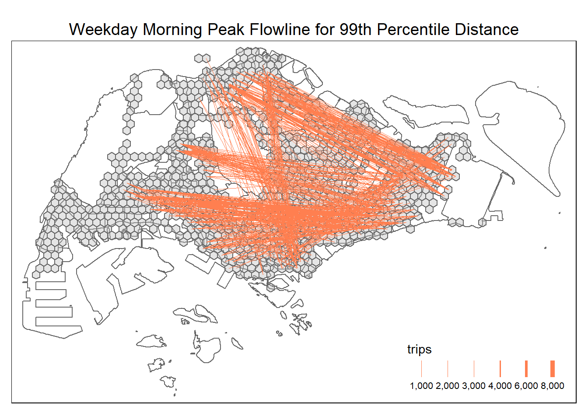
busier in central and east
4.4 99th Quantile Distance (18587)
Code
quantile(flowline$distance, probs = seq(0, 1, 0.01), na.rm = TRUE) 0% 1% 2% 3% 4% 5%
36.87007 522.53556 703.08425 842.92091 957.30393 1076.69574
6% 7% 8% 9% 10% 11%
1191.59355 1294.46529 1395.65614 1489.93693 1590.51016 1692.12325
12% 13% 14% 15% 16% 17%
1788.92064 1884.42267 1968.51790 2066.41607 2153.43370 2248.29253
18% 19% 20% 21% 22% 23%
2338.39987 2428.43872 2528.60989 2612.44437 2706.87957 2792.76077
24% 25% 26% 27% 28% 29%
2875.97264 2975.46354 3062.97268 3156.09125 3248.58762 3341.38852
30% 31% 32% 33% 34% 35%
3436.60368 3532.15466 3619.70478 3714.09747 3821.74327 3915.36034
36% 37% 38% 39% 40% 41%
4013.05342 4111.42886 4211.00286 4309.25745 4407.09453 4506.11532
42% 43% 44% 45% 46% 47%
4606.54736 4724.02732 4829.68679 4923.53519 5029.76657 5148.01533
48% 49% 50% 51% 52% 53%
5256.28523 5366.38472 5478.89233 5590.89734 5703.79373 5819.80587
54% 55% 56% 57% 58% 59%
5944.54472 6059.26949 6179.22714 6300.95726 6428.67668 6545.52174
60% 61% 62% 63% 64% 65%
6669.27414 6806.63320 6922.99694 7069.83774 7213.24856 7348.42508
66% 67% 68% 69% 70% 71%
7493.32313 7632.98202 7789.55420 7938.62851 8100.13558 8257.52288
72% 73% 74% 75% 76% 77%
8421.55252 8580.78061 8745.64754 8923.04164 9097.35752 9283.90751
78% 79% 80% 81% 82% 83%
9487.10764 9677.10337 9869.40942 10077.52431 10281.94764 10486.38616
84% 85% 86% 87% 88% 89%
10700.11506 10930.16294 11188.95602 11451.48411 11717.97156 12036.64141
90% 91% 92% 93% 94% 95%
12378.97126 12746.11568 13121.55663 13560.13147 13987.01526 14526.64946
96% 97% 98% 99% 100%
15194.10259 15983.84859 17018.69635 18587.39427 25292.03624 Code
tmap_mode('plot')
tmap_options(check.and.fix = TRUE)
tm_shape(mpsz) +
tm_polygons(col = 'white') +
tm_shape(hexagons_with_bus_stops) +
tm_polygons(alpha = 0.4,
col = 'gray') +
flowline %>%
filter(trips >= 6082) %>%
tm_shape() +
tm_lines(col = 'coral',
lwd = "trips",
scale = c(0.1, 1, 2, 3, 4, 5, 6, 7))+
tm_layout(main.title = 'Weekday Morning Peak Flowline for 99th Percentile Distance', main.title.position = 'center',
main.title.size = 1.2)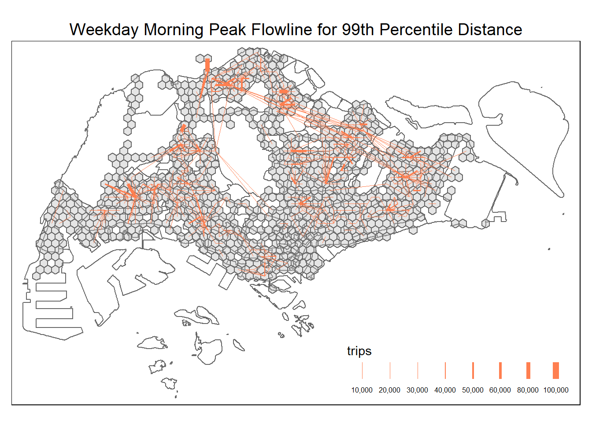
north-downtown and north-east becomes more visible
4.5 Use GIF
5 Assembling Push & Pull Factor
5.1 Push
show flow vs variables ## Pull show flow vs variables
6 Spatial Interaction Model
6.1 Correlation Analysis
6.2 Run the Model
6.3 Compare The Result
add R2 on top of RMSE ## Visualize the Result Fitted Value
Log it
6.4 Conclusion
7 References
Cengel. Introduction to spatial data in R
Coşkun, et al. (2020). Performance Matters on Identification of Origin-Destination Matrix on Geospatial Big Data
Daniels & Mulley. Explaining walking distance to public transport: The dominance of public transport supply
Haynes & Fotheringham (1985). Gravity and Spatial Interaction Models
Kam Tin Seong. 16 Calibrating Spatial Interaction Models with R
Miller (2021). TRAFFIC ANALYSIS ZONE DEFINITION: ISSUES & GUIDANCE
R. Spatial interaction models with R
Sekste and Kazakov. “H3 hexagonal grid: Why we use it for data analysis and visualization”.
Sid Dhuri (2020). “Spatial Data Analysis With Hexagonal Grids”
Tao Ran (2021). Big Spatial Flow Data Analytics. In: Werner, M., Chiang, YY. (eds) Handbook of Big Geospatial Data
Land Transport Authority. Land Transport Data Mall